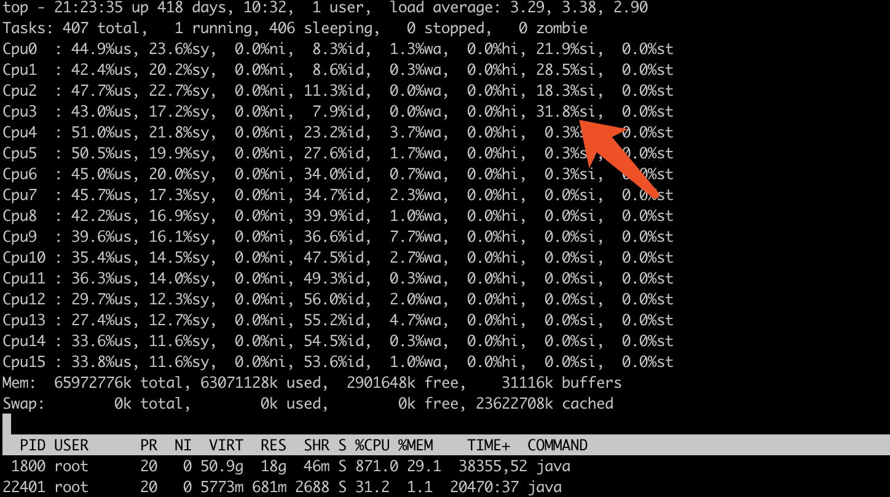

前言
Computer Science
计算机知识点
目的
- 做笔记
- 对知识划分层次
- 学会表达自己的理解
知识层次
一个知识点
你接触了，是一个层次
你用会了，又是一个层次
你弄懂了，那又是一个层次
你写出来让别人懂，那又是更高的一个层次
你用最通俗的言语，把知识点讲出来，让别人一下子明白，这是一个很高的层次
理解
见的东西越多，学的东西越快
技术提升点
- 网络
- 数据结构-算法
- 数学
- 操作系统
- 硬件
计算机
一致性，无二义性
Base
位操作
go和c的位操作符
- 与 &
- 或 |
- 异或 ^
- 右移 >>
- 左移 <<
- 按位取反 ~
区别：
- go里面没有~, 用^代替
示例
i&1 == 0 // 判断奇偶
i|0 // 位或
^a + 1 // 变换符号 go版本
~a + 1 // 变换符号 c版本
a ^= b // 交换两个变量的值
b ^= a
a ^= b
交换2个数的算法
1. 用第三个变量
2. 用
c = a + b;
a = c - a;
b = c - b;
3. 位异或
a ^ a = 0
a ^ 0 = a
a = b <=> a = b^(a^a) <=> a^(a^b)
b = a <=> b = a^(b^b)^(a^a) <=> a^(a^b)^(a^b)
所以类推之 a^b
a ^= b
b ^= a
a ^= b
4. 语言原生支持(go)
a, b = b, a
字节
数据
数据存储在计算机中都是流的形式，即一串字节数据, 都是010101001的
字节序
顾名思义字节的顺序，大于一个字节类型的数据在内存中的存放顺序。其实大部分人在实际的开 发中都很少会直接和字节序打交道。唯有在跨平台以及网络程序中字节序才是一个应该被考虑的问题。
网络序
先发送高字节数据再发送低字节数据（如：四个字节由高位向低位用0-31标示后，将首先发送0-7位第一字节，在发送8-15第二字节，以此下去）。IP协议中定义大端为网络字节序。
主机字节序
大端小端
1.概念 大端：多字节的低位在内存的高位，高位在内存的低位 小端：多字节的低位在内存的低位，高位在内存的高位
比如：int a = 0x12345678
0x0001 0x0002 0x0003 0x0004 内存由低变高
大端 0x12 0x34 0x56 0x78
小端 0x78 0x56 0x34 0x12
采用大端方式进行数据存放符合人类的正常思维,小端方式进行数据存放利于计算机处理 大端类似处理字符串，小端类似逆序放置字符串
2.现状
在网络上传输数据普遍采用的都是大端，而小端模式处理器的字节序到网络字节必须要进行转换 一般操作系统都是小端，而通讯协议是大端的。
-
CPU的字节序 Big Endian : PowerPC、IBM、Sun Little Endian : x86、DEC、Intel的Pentuim ARM既可以工作在大端模式，也可以工作在小端模式。 MIPS等芯片要么采用全部大端的方式储存，要么提供选项支持大端——可以在大小端之间切换
-
常见文件的字节序 Big Endian Adobe PS JPEG MacPaint Little Endian BMP GIF RTF Variable DXF(AutoCAD)
-
编译器
在C语言中，默认是小端 Java和所有的网络通讯协议都是使用Big-Endian的编码
代码检测
方法1：
#include <stdio.h>
int check()
{
int i = 1;
i = *(char*)&i;//取 i 的地址 强制类型转换后解引用
return i;
}
int main(void)
{
if(check()==1)
printf("小端模式存储！\n");
else
printf("大端模式存储！\n");
return 0;
}
方法2：
#include <stdio.h>
int check()
{
union UN
{
char c;
int i;
}un;
un.i = 1;
return un.c;
}
int main(void)
{
if(check()==1)
printf("小端模式存储！\n");
else
printf("大端模式存储！\n");
return 0;
}
方法3：
#include <stdio.h>
int check()
{
union UN
{
char a [4];
int i ;
} un ;
un .i = 1;
//02 是整数不够2位就补上0 x是以16进制输出 hhx 表示只输出两位
printf ("%02hhx %02hhx %02hhx %02hhx\n", un .a [0], un. a [1],un . a[2], un .a [3]);
return un . a[0];
}
int main(void)
{
if(check()==1)
printf("小端模式存储！\n");
else
printf("大端模式存储！\n");
return 0;
}
使用工具来查看顺序
od -b 单字节八进制显示 od -c ASCII码进行输出，其中包括转义字符 od -t 单字节十进制进行解释 hexdump
编码
ASCII 单字节编码 UTF16BE UTF16LE UTF-8 with BOM UTF-8 withoutBOM UTF-8 UTF（UCS Transfer Format) 变长编码
BOM
BOM是Byte Order Mark的缩写，它用来指明编码，如下所示：
BOM 编码 FE FF UTF16BE FF FE UTF16LE EF BB BF UTF-8
字符集
UNICODE 多字节编码 为每一个「字符」分配一个唯一的 ID（学名为码位 / 码点 / Code Point） 「知」的码位是 30693，记作 U+77E5（30693 的十六进制为 0x77E5）。 UTF-8 顾名思义，是一套以 8 位为一个编码单位的可变长编码。会将一个码位编码为 1 到 4 个字节：U+ 0000 ~ U+ 007F: 0XXXXXXX U+ 0080 ~ U+ 07FF: 110XXXXX 10XXXXXX U+ 0800 ~ U+ FFFF: 1110XXXX 10XXXXXX 10XXXXXX U+10000 ~ U+1FFFF: 11110XXX 10XXXXXX 10XXXXXX 10XXXXXX
biz
关注
概念
a和b之间的关注关系:
a单向关注b
b单向关注a
a和b互相关注
a和b毫无关联
a和b的拉黑关系:
有关注, 就有了粉丝
我关注了别人, 我的粉丝有哪些, 和我互粉的有哪些人
不分表分库
一张表, 1条记录
当uid, to_uid等价于to_uid, uid, 增加status
CRATE TABLE follow (
uid
to_uid
status
)
uid < to_uid
select *from follow where uid = low and touid = high
select *from follow where (uid = low and status = 1) or (touid = high and status =2)
0 无关系
1 单向关注 a->b
2 单向关注 a<-b
3 互相关注 a<->b
一张表, 2条记录
当uid, to_uid不等价于to_uid, uid
CRATE TABLE follow (
uid
to_uid
)
我的关注 select * from follow where uid = 1
我的粉丝 select * from follow where touid = 1
相互关注 (select *from follow where uid = 1 and touid = 2) and (select* from follow where uid = 2 and touid = 1)
2张表
follow表
fan表
不分表分库的话，这个基本是没意义的, 单表就能解决关注和粉丝
分表分库
follow表, fan表
uid 来做分表的字段
查询自己的关注, 粉丝
直播流
流和视频格式
视频解码
- 基于MSE
- 基于HLS手机端播放
- 基于客户端播放
- 基于flash的
RTMP推流
优点
- 延迟小，
- 方案比较成熟
- 广告插入方便
缺点
- 性能消耗大
- 需要额外安装flash插件
- 安全漏洞
- 底层代码封闭
基于html5的
优点
- 技术成本低，无需引入额外的技术
- 性能消耗低
缺点
- 延时性高
- html5容易盗链
- 方案不成熟，各家公司都有自己的标准
总结
各家公司都用自己掌握的技术，技术迁移成本大 需要年轻有想法的人去推进
直播协议
-
RTMP: 底层基于TCP，在浏览器端依赖Flash。
-
HTTP-FLV: 基于HTTP流式IO传输FLV，依赖浏览器支持播放FLV。
-
WebSocket-FLV: 基于WebSocket传输FLV，依赖浏览器支持播放FLV。WebSocket建立在HTTP之上，建立WebSocket连接前还要先建立HTTP连接。
-
HLS: Http Live Streaming，苹果提出基于HTTP的流媒体传输协议。HTML5可以直接打开播放。
-
RTP: 基于UDP，延迟1秒，浏览器不支持。
流媒体格式
- FLV Flash Video
- m3u8 ts文件
Flash 历史
在PC时代，Flash曾长期处于鼎盛时期，期间经历了三次高峰，分别是1999年的动画时代、2005年的Flash Video时代与2008年的Web Game时代，这三次互联网领域的高峰全都被Flash赶上。
DB
MySQL
MySQL
设置用户和权限
// 选择数据库
use mysql;
// 查看用户
select host, user, password from user;
// 创建用户
insert into user(host,user,password) values("localhost","remote",password("qwe1234"));
// 授权
grant all privileges on `test`.* to 'remote'@'%' identified by 'qwe1234';
grant all privileges on `test`.* to 'remote'@'localhost' identified by 'qwe1234';
// 取消授权
revoke all privileges on `test`.* from 'remote'@'%' identified by 'qwe1234';
revoke all privileges on `test`.* from 'remote'@'locahost' identified by 'qwe1234';
// 刷新权限
flush privileges;
// 查看用户权限
show grants for 'remote'@'%';
show grants for 'remote'@'localhost';
mysql5.6
select host, user, password, ssl_cipher, x509_issuer, x509_subject from user;
insert into user(host,user,password, ssl_cipher, x509_issuer, x509_subject) values("localhost","remote",password("qwe1234"), '', '', '');
修改密码
select user();
flush privileges;
set password=password('123456');
配置
// 查看MySQL配置文件
mysql find my.cnf
// 查看编码设置
show variables like "char%"
// 显示数据目录
show global variables like "%datadir%";
解决乱码
# 在my.cnf中设置编码格式
[client]
default-character-set=utf8
[mysqld]
character-set-server=utf8
collation-server=utf8_general_ci
mysqld的默认编码是Latin1, 不支持中文
client默认跟随系统
时区
mysql默认的时区不是东八区, 需要手动设置, 执行完重新登录
select now(); // 查看mysql系统时间。和当前时间做对比
set global time_zone = '+8:00'; // 设置时区更改为东八区
flush privileges; // 刷新权限
导出数据
mysqldump -u用戶名 -p密码 -d 数据库名 表名 脚本名;
1、导出数据库为dbname的表结构（其中用戶名为root,密码为dbpasswd,生成的脚本名为db.sql）
mysqldump -uroot -pdbpasswd -d dbname >db.sql;
2、导出数据库为dbname某张表(test)结构
mysqldump -uroot -pdbpasswd -d dbname test>db.sql;
3、导出数据库为dbname所有表结构及表数据（不加-d）
mysqldump -uroot -pdbpasswd dbname >db.sql;
4、导出数据库为dbname某张表(test)结构及表数据（不加-d）
mysqldump -uroot -pdbpasswd dbname test>db.sql;
额外
索引
B-Tree 索引：最常见的索引类型，大部分引擎都支持B树索引。
HASH 索引：只有Memory引擎支持，使用场景简单。
R-Tree 索引(空间索引)：空间索引是MyISAM的一种特殊索引类型，主要用于地理空间数据类型。
Full-text (全文索引)：全文索引也是MyISAM的一种特殊索引类型，主要用于全文索引，InnoDB从MYSQL5.6版本提供对全文索引的支持。
normal：表示普通索引
unique：表示唯一的，不允许重复的索引
MySQL必知必会
了解SQL
数据库是一个以某种组织方式存储的数据集合 表是一种结构化的文件，可用来存储某种特定类型的数据 模式（schema） 关于数据库和表的布局及特性的信息
主键 <=> 非空, 唯一 任意两行都不具有相同的主键值 每个行都必须具有一个主键值（主键列不允许NULL值） 不更新主键列中的值 不用使用可能会更改的列中做主键
MySQL简介
DBMS可分为两类：一类为基于共享文件系统的DBMS，另一类为基于客户机—服务器的DBMS
使用MySQL
mysql -u root -p -h localhost -P 3306
USE DATABASENAME;
SHOW DATABSASES;
SHOW TABLES;
SHOW COLUMNS FROM TABLENAME; <=> DESCRIBE TABLENAME;
SHOE STATUS;
SHOW CREATE DATABASE;
SHOW CREATE TABLE;
SHOW GRANTS;
SHOW ERRORS;
SHOW WARNINGS;
HELP SHOW; // 显示允许的SHOW语句
检索数据
SQL不区分大小写: 许多SQL开发人员喜欢对所有SQL关键字使用大写，而对所有列和表名使用小写，这样做使代码更易于阅读和调试。
数据表示 SQL语句一般返回原始的、无格式的数据。数据的格式化是一个表示问题，而不是一个检索问题。因此，表示（对齐和显示上面的价格值，用货币符号和逗号表示其金额）一般在显示该数据的应用程序中规定。一般很少使用实际检索出的原始数据（没有应用程序提供的格式）。 通配符() 一般，除非你确实需要表中的每个列，否则最好别使用通配符。虽然使用通配符可能会使你自己省事，不用明确列出所需列，但检索不需要的列通常会降低检索和应用程序的性能。 SELECT SELECT prod_id FROM products; SELECT prod_id, prod_name, prod_price FROM products; SELECT * FROM products; SELECT DISTINCT vend_id FROM products;
DISTINCT 不能部分使用DISTINCT,DISTINCT关键字应用于所有列而不仅是前置它的列。如果给出SELECT DISTINCT vend_id,prod_price，除非指定的两个列都不同，否则所有行都将被检索出来。
LIMIT 下标, 数目 下表从0开始,即行0 SELECT prod_name FROM products LIMIT 5; SELECT prod_name FROM products LIMIT 1, 1;
LIMIT 4 OFFSET 3意为从行3开始取4行，就像LIMIT 3, 4一样。
完全限定 使用库名, 表名限定查询
排序检索数据
子句（clause） SQL语句由子句构成，有些子句是必需的，而有的是可选的。一个子句通常由一个关键字和所提供的数据组 ORDER BY 默认升序(ASC),降序(DESC) 单个: SELECT prod_name FROM products ORDER BY prod_price;升序 SELECT prod_name FROM products ORDER BY prod_name DESC;降序 多个: SELECT prod_name, prod_price, prod_id FROM products ORDER BY prod_price, prod_name; 首先按价格，然后再按名称排序。 仅在多个行具有相同的prod_price值时才对产品按prod_name进行排序 在多个列上降序排序 如果想在多个列上进行降序排序，必须对每个列指定DESC关键字。 区分大小写和排序顺序 在对文本性的数据进行排序时，A与a相同吗？a位于B之前还是位于Z之后？这些问题不是理论问题，其答案取决于数据库如何设置。在字典（dictionary）排序顺序中，A被视为与a相同，这是MySQL（和大多数数据库管理系统）的默认行为。但是，许多数据库管理员能够在需要时改变这种行为（如果你的数据库包含大量外语字符，可能必须这样做）。 查找最大的价格 SELECT prod_price FROM products ORDER BY prod_price DESC LIMIT 1; 在给出ORDER BY子句时，应该保证它位于FROM子句之后。如果使用LIMIT，它必须位于ORDER BY之后。
过滤数据
SQL过滤与应用过滤 数据也可以在应用层过滤。为此目的，SQL的SELECT语句为客户机应用检索出超过实际所需的数据，然后客户机代码对返回数据进行循环，以提取出需要的行。通常，这种实现并不令人满意。因此，对数据库进行了优化，以便快速有效地对数据进行过滤。让客户机应用（或开发语言）处理数据库的工作将会极大地影响应用的性能，并且使所创建的应用完全不具备可伸缩性。此外，如果在客户机上过滤数据，服务器不得不通过网络发送多余的数据，这将导致网络带宽的浪费。
在同时使用ORDER BY和WHERE子句时，应该让ORDER BY位于WHERE之后
何时使用引号:
单引号用来限定字符串。如果将值与串类型的列进行比较，则需要限定引号。用来与数值列进行比较的值不用引号。
= != <> < <= > >= BETWEEN AND
IS
NULL
在过滤数据时，一定要验证返回数据中确实给出了被过滤列具有NULL的行。
数据过滤
操作符（operator） 用来联结或改变WHERE子句中的子句的关键字。也称为逻辑操作符（logical operator）
AND, OR
SELECT prod_name, prod_price FROM products WHERE vend_id = 1003 AND prod_price < 10;
SELECT prod_name, prod_price FROM products WHERE vend_id = 1002 or vend_id = 1003;
在WHERE子句中使用圆括号 任何时候使用具有AND和OR操作符的WHERE子句，都应该使用圆括号明确地分组操作符。不要过分依赖默认计算次序，即使它确实是你想要的东西也是如此。使用圆括号没有什么坏处，它能消除歧义。
IN
SELECT prod_name, prod_price FROM products WHERE vend_id IN(1002, 1003);
为什么要使用IN操作符？
1.在使用长的合法选项清单时，IN操作符的语法更清楚且更直观。
2.在使用IN时，计算的次序更容易管理（因为使用的操作符更少）。
3.IN操作符一般比OR操作符清单执行更快。
4.IN的最大优点是可以包含其他SELECT语句，使得能够更动态地建立WHERE子句。第14章将对此进行详细介绍。
NOT
为什么使用NOT？
对于简单的WHERE子句，使用NOT确实没有什么优势。但在更复杂的子句中，NOT非常有用的。例如，在与IN操作符联合使用时，NOT使找出与条件列表不匹配的行非常简单。
MySQL中的NOT
MySQL支持使用NOT 对IN 、BETWEEN 和EXISTS子句取反，这与多数其他DBMS允许使用NOT对各种条件取反有很大的差别。
通配符进行过滤
通配符（wildcard） 用来匹配值的一部分的特殊字符。
搜索模式（search pattern）由字面值、通配符或两者组合构成的搜索条件。
通配符本身实际是SQL的WHERE子句中有特殊含义的字符。
LIKE
SELECT prod_id, prod_name FROM products WHERE prod_name LIKE 'jet%';
通配符
%, _,
%并不能匹配NULL
技巧:
不要过度使用通配符
在确实需要使用通配符时，除非绝对有必要，否则不要把它们用在搜索模式的开始处
仔细注意通配符的位置
正则表达式进行搜索
SELECT prod_name FROM products WHERE prod_name REGEXP 'JetPack .000';
分区分大小写:
BINARY
SELECT prod_name FROM products WHERE prod_name REGEXP BINARY 'JetPack .000';
| [] \\r(转义字符) [:alnum:](匹配字符类) 元字符 定位符
测试正则表达式
SELECT 'hello' REGXP '[0-9]';
SELECT Trim('abc');
SELECT 2 * 3;
SELECT Now();
创建计算字段
Concat()
拼接（concatenate） 将值联结到一起构成单个值。
SELECT Concat(vend_name, '(', vend_country, ')') FROM vendors ORDER BY vend_name;
Trim(), RTrim(), LTrim()
SELECT Concat(RTrim(vend_name), '(', vend_country, ')') FROM vendors ORDER BY vend_name;
alias别名
SELECT Concat(RTrim(vend_name), '(', vend_country, ')') AS vend_title FROM vendors ORDER BY vend_name;
算术运算
+ - * /
SELECT prod_id, quantity, item_price FROM orderitems WHERE order_num = 20005;
SELECT prod_id, quantity, item_price, quantity * item_price AS expanded_price FROM orderitems WHERE order_num = 20005;
使用数据处理函数
Left() 返回串左边的字符
Length() 返回串的长度
Locate() 找出串的一个子串
Lower() 将串转换为小写
LTrim() 去掉串左边的空格
Right() 返回串右边的字符
RTrim() 去掉串右边的空格
Soundex() 返回串的SOUNDEX值
SubString() 返回子串的字符
Upper() 将串转换为大写
SELECT prod_name, Upper(prod_name) AS prod_name_upcase FROM products;
SELECT cust_name, cust_contact FROM customers WHERE cust_contact = 'Y. Lie';
SELECT cust_name, cust_contact FROM customers WHERE SOUNDEX(cust_contact) = SOUNDEX('Y. Lie');
日期时间
SELECT cust_id, order_num FROM orders WHERE order_date = '2005-09-01';
SELECT cust_id, order_num FROM orders WHERE Date(order_date) = '2005-09-01';
SELECT cust_id, order_num FROM orders WHERE Date(order_date) BETWEEN '2005-09-01' AND '2005-09-30';
SELECT cust_id, order_num FROM orders WHERE Year(order_date) = 2005 AND Month(order_date) = 9;
数值函数
Abs() 返回一个数的绝对值
Cos() 返回一个角度的余弦
Exp() 返回一个数的指数值
Mod() 返回除操作的余数
Pi() 返回圆周率
Rand() 返回一个随机数
Sin() 返回一个角度的正弦
Sqrt() 返回一个数的平方根
Tan() 返回一个角度的正切
汇总数据
聚集函数（aggregate function） 运行在行组上，计算和返回单个值的函数。
AVG() 返回某列的平均值
COUNT() 返回某列的行数
MAX() 返回某列的最大值
MIN() 返回某列的最小值
SUM() 返回某列值之和
SELECT AVG(prod_price) AS avg_price FROM products;
AVG()函数忽略列值为NULL的行。
SELECT COUNT(*) AS num_cust FROM customers;
SELECT COUNT(cust_email) AS num_cust FROM customers;
NULL值 如果指定列名，则指定列的值为空的行被COUNT()函数忽略，但如果COUNT()函数中用的是星号（*），则不忽略。
SELECT MAX(prod_price) AS max_price FROM products;
对非数值数据使用MAX() 虽然MAX()一般用来找出最大的数值或日期值，但MySQL允许将它用来返回任意列中的最大值，包括返回文本列中的最大值。在用于文本数据时，如果数据按相应的列排序，则MAX()返回最后一行。
NULL值 MAX()函数忽略列值为NULL的行。
SELECT SUM(quantity) AS item_ordered FROM orderitems WHERE order_num = 20005;
NULL值 SUM()函数忽略列值为NULL的行。
DISTINCT
SELECT AVG(DISTINCT prod_price) AS avg_price FROM products;
分组数据
GROUP BY
SELECT vend_id, COUNT(*) FROM products GROUP BY vend_id;
规定:
1.GROUP BY子句可以包含任意数目的列。这使得能对分组进行嵌套，为数据分组提供更细致的控制。
2.如果在GROUP BY子句中嵌套了分组，数据将在最后规定的分组上 进行汇总。换句话说，在建立分组时，指定的所有列都一起计算 （所以不能从个别的列取回数据）。
3.GROUP BY子句中列出的每个列都必须是检索列或有效的表达式 （但不能是聚集函数）。如果在SELECT中使用表达式，则必须在
4.GROUP BY子句中指定相同的表达式。不能使用别名。 除聚集计算语句外，SELECT语句中的每个列都必须在GROUP BY子句中给出。
5.如果分组列中具有NULL值，则NULL将作为一个分组返回。如果列 中有多行NULL值，它们将分为一组。
6.GROUP BY子句必须出现在WHERE子句之后，ORDER BY子句之前。
HAVING
目前为止所学过的所有类型的WHERE子句都可以用HAVING来替代。唯一的差别是WHERE过滤行，而HAVING过滤分组。
WHERE在数据分组前进行过滤，HAVING在数据分组后进行过滤。这是一个重要的区别，WHERE排除的行不包括在分组中。这可能会改变计算值，从而影响HAVING子句中基于这些值过滤掉的分组。
SELECT cust_id, COUNT(*) FROM orders GROUP BY cust_id HAVING COUNT(*) >= 2;
SELECT vend_id, COUNT(*) FROM products WHERE prod_price >= 10 GROUP BY vend_id HAVING COUNT(*) >= 2;
ORDER BY与GROUP BY
ORDER BY
排序产生的输出
任意列都可以使用（甚至非选择的列也可以使用）
不一定需要
GROUP BY
分组行。但输出可能不是分组的顺序
只可能使用选择列或表达式列，而且必须使用每个选择列表达式
如果与聚集函数一起使用列（或表达式），则必须使用
SELECT子句顺序
子 句 说 明 是否必须使用
SELECT 要返回的列或表达式 是
FROM 从中检索数据的表 仅在从表选择数据时使用
WHERE 行级过滤 否
GROUP BY 分组说明 仅在按组计算聚集时使用
HAVING 组级过滤 否
ORDER BY 输出排序顺序 否
LIMIT 要检索的行数 否
子查询
SELECT cust_name, cust_contact FROM customers WHERE cust_id IN (
SELECT cust_id FROM orders WHERE order_num IN (
SELECT order_num FROM orderitems WHERE prod_id = 'TNT2'));
相关子查询（correlated subquery） 涉及外部查询的子查询。
SELECT cust_name, cust_state, (SELECT COUNT(*) FROM orders WHERE orders.cust_id = customers.cust_id) AS orders FROM customers ORDER BY cust_name;
连接表
WHERE
SELECT vend_name, prod_name, prod_price FROM vendors, products WHERE vendors.vend_id = products.vend_id ORDER BY vend_name, prod_name;
笛卡儿积（cartesian product） 由没有联结条件的表关系返回的结果为笛卡儿积。检索出的行的数目将是第一个表中的行数乘以第二个表中的行数。
内部连接
SELECT vend_name, prod_name, prod_price FROM vendors INNER JOIN products ON vendors.vend_id = products.vend_id ORDER BY vend_name, prod_name;
使用哪种语法
ANSI SQL规范首选INNER JOIN语法。此外，尽管使用WHERE子句定义联结的确比较简单，但是使用明确的联结语法能够确保不会忘记联结条件，有时候这样做也能影响性能。
多个表连接
SELECT prod_name, vend_name, prod_price, quantity FROM orderitems, products, vendors WHERE products.vend_id = vendors.vend_id AND orderitems.prod_id = products.prod_id AND order_num = 20005;
正如第14章所述，子查询并不总是执行复杂SELECT操作的最有效的方法，下面是使用联结的相同查询：
SELECT cust_name, cust_contact FROM customers, orders, orderitems WHERE customers.cust_id = orders.cust_id AND orders.order_num = orderitems.order_num AND prod_id = 'TNT2';
高级连接
表别名只在查询执行中使用。与列别名不一样，表别名不返回到客户机。
等值联结
自然联结<=>内部连接
外部联结，左外连接，右外连接，全连接
SELECT p1.prod_id, p1.prod_name FROM products AS p1, products AS p2 WHERE p1.vend_id = p2.vend_id AND p2.prod_id = 'DTNTR';
用自联结而不用子查询 自联结通常作为外部语句用来替代从相同表中检索数据时使用的子查询语句。虽然最终的结果是相同的，但有时候处理联结远比处理子查询快得多。应该试一下两种方法，以确定哪一种的性能更好。
SELECT c.*, o.order_num, o.order_date, oi.prod_id, oi.quantity, oi.item_price FROM customers AS c, orders AS o, orderitems AS oi WHERE c.cust_id = o.cust_id AND oi.order_num = o.order_num AND prod_id = 'FB';
自然联结排除多次出现，使每个列只返回一次。迄今为止我们建立的每个内部联结都是自然联结，很可能我们永远都不会用到不是自然联结的内部联结。
SELECT customers.cust_id, orders.order_num FROM customers LEFT OUTER JOIN orders ON customers.cust_id = orders.cust_id;
SELECT customers.cust_id, orders.order_num FROM customers RIGHT OUTER JOIN orders ON customers.cust_id = orders.cust_id;
外部联结的类型 存在两种基本的外部联结形式：左外部联结和右外部联结。它们之间的唯一差别是所关联的表的顺序不同。换句话说，左外部联结可通过颠倒FROM或WHERE子句中表的顺序转换为右外部联结。因此，两种类型的外部联结可互换使用，而究竟使用哪一种纯粹是根据方便而定。
组合查询
多数SQL查询都只包含从一个或多个表中返回数据的单条SELECT语句。MySQL也允许执行多个查询（多条SELECT语句），并将结果作为单个查询结果集返回。这些组合查询通常称为并（union）或复合查询（compound query）。
有两种基本情况，其中需要使用组合查询：
在单个查询中从不同的表返回类似结构的数据；
对单个表执行多个查询，按单个查询返回数据。
如果遵守了这些基本规则或限制，则可以将并用于任何数据检索任务。
1.UNION必须由两条或两条以上的SELECT语句组成，语句之间用关键字UNION分隔（因此，如果组合4条SELECT语句，将要使用3个UNION关键字）。
2.UNION中的每个查询必须包含相同的列、表达式或聚集函数（不过各个列不需要以相同的次序列出）。
3.列数据类型必须兼容：类型不必完全相同，但必须是DBMS可以隐含地转换的类型（例如，不同的数值类型或不同的日期类型）。
UNION从查询结果集中自动去除了重复的行，这是UNION的默认行为，但是如果需要，可以改变它。事实上，如果想返回所有匹配行，可使用UNION ALL而不是UNION。
SELECT语句的输出用ORDER BY子句排序。在用UNION组合查询时，只能使用一条ORDER BY子句，它必须出现在最后一条SELECT语句之后。
全文本搜索
两个最常使用的引擎为MyISAM和InnoDB，前者支持全文本搜索，而后者不支持。
不要在导入数据时使用FULLTEXT
更新索引要花时间，虽然不是很多，但毕竟要花时间。如果正在导入数据到一个新表，此时不应该启用FULLTEXT索引。应该首先导入所有数据，然后再修改表，定义FULLTEXT。这样有助于更快地导入数据（而且使索引数据的总时间小于在导入每行时分别进行索引所需的总时间）。
使用两个函数Match()和Against()执行全文本搜索
SELECT note_text FROM productnotes WHERE MATCH(note_text) Against('rabbit');
使用完整的Match() 说明 传递给Match() 的值必须与FULLTEXT()定义中的相同。如果指定多个列，则必须列出它们（而且次序正确）。
搜索不区分大小写除非使用BINARY方式（本章中没有介绍），否则全文本搜索不区分大小写。
正如所见，全文本搜索提供了简单LIKE搜索不能提供的功能。而且，由于数据是索引的，全文本搜索还相当快。
查询扩展
布尔文本搜索
插入数据
总是使用列的列表 一般不要使用没有明确给出列的列表的INSERT语句。使用列的列表能使SQL代码继续发挥作用，即使表结构发生了变化。
提高INSERT的性能 此技术可以提高数据库处理的性能，因为MySQL用单条INSERT语句处理多个插入比使用多条INSERT语句快。
INSERT SELECT中SELECT语句可包含WHERE子句以过滤插入的数据。
更新和删除数据
删除表的内容而不是表，DELETE语句从表中删除行，甚至是删除表中所有行。但是，DELETE不删除表本身。
更快的删除
如果想从表中删除所有行，不要使用DELETE。可使用TRUNCATE TABLE语句，它完成相同的工作，但速度更快（TRUNCATE实际是删除原来的表并重新创建一个表，而不是逐行删除表中的数据）
创建和操纵表
InnoDB是一个可靠的事务处理引
MEMORY在功能等同于MyISAM，但由于数据存储在内存（不是磁盘）中，速度很快（特别适合于临时表）
MyISAM是一个性能极高的引擎，它支持全文本搜索，但不支持事务处理。
外键不能跨引擎 混用引擎类型有一个大缺陷。外键（用于强制实施引用完整性，如第1章所述）不能跨引擎，即使用一个引擎的表不能引用具有使用不同引擎的表的外键。
视图
视图是虚拟的表。与包含数据的表不一样，视图只包含使用时动态检索数据的查询。
视图用CREATE VIEW语句来创建。使用SHOW CREATE VIEW viewname；来查看创建视图的语句。 用DROP删除视图，其语法为DROP VIEW viewname; 更新视图时，可以先用DROP再用CREATE，也可以直接用CREATE OR REPLACE VIEW。如果要更新的视图不存在，则第2条更新语句会创建一个视图；如果要更新的视图存在，则第2条更新语句会替换原有视图。
本章许多例子中的视图都是不可更新的。这听上去好像是一个严重的限制，但实际上不是，因为视图主要用于数据检索。应该将视图用于检索（SELECT语句）而不用于更新（INSERT、UPDATE和DELETE）。
存储过程
存储过程简单来说，就是为以后的使用而保存的一条或多条MySQL语句的集合。可将其视为批文件，虽然它们的作用不仅限于批处理。
换句话说，使用存储过程有3个主要的好处，即简单、安全、高性能。
游标
指向查询的结果集
触发器
它们都需要在某个表发生更改时自动处理。这确切地说就是触发器。触发器是MySQL响应以下任意语句而自动执行的一条MySQL语句（或位于BEGIN和END语句之间的一组语句）：
DELETE；
INSERT；
UPDATE。
其他MySQL语句不支持触发器。
事务
事务处理（transaction processing）可以用来维护数据库的完整性，它保证成批的MySQL操作要么完全执行，要么完全不执行。
事务（transaction）指一组SQL语句；
回退（rollback）指撤销指定SQL语句的过程；
提交（commit）指将未存储的SQL语句结果写入数据库表；
保留点（savepoint）指事务处理中设置的临时占位符（placeholder），你可以对它发布回退（与回退整个事务处理不同）
哪些语句可以回退？
事务处理用来管理INSERT、UPDATE和DELETE语句。你不能回退SELECT语句。（这样做也没有什么意义。）你不能回退CREATE或DROP操作。事务处理块中可以使用这两条语句，但如果你执行回退，它们不会被撤销。
隐含事务关闭当COMMIT或ROLLBACK语句执行后，事务会自动关闭（将来的更改会隐含提交）。
释放保留点保留点在事务处理完成（执行一条ROLLBACK或COMMIT）后自动释放。自MySQL 5以来，也可以用RELEASE SAVEPOINT明确地释放保留点。
START TANSACTION ROLLBACK COMMIT SAVEPOINT ROLLBACK TO
标志为连接专用 autocommit标志是针对每个连接而不是服务器的。
SET autocommit = 0
ACID，是指数据库管理系统（DBMS）在写入或更新资料的过程中，为保证事务（transaction）是正确可靠的，所必须具备的四个特性：原子性（atomicity，或称不可分割性）、一致性（consistency）、隔离性（isolation，又称独立性）、持久性（durability）。
全球化和本地化
SHOW CHARACTER SET; SHOW COLLATION;
SHOW VARIABLES LIKE 'character%';
SHOW VARIABLES LIKE 'collation%';
安全管理
安全
CREATE USER rrf IDENTIFIED BY 'password';
RENAME USER rrf TO ruifeng;
DROP USER rrf;
SHOW GRANTS FOR rrf;
GRANT SELECT ON test.* TO rrf;
REVOKE SELECT ON test.* TO rrf;
整个服务器，使用GRANT ALL和REVOKE ALL； 整个数据库，使用ON database.*； 特定的表，使用ON database.table； 特定的列； 特定的存储过程。
SET PASSWORD FOR rrf = Password('123456');
数据库维护
FLUSH TABLES;
ANALYZE TABLE orders;
日志
改善性能
应该总是使用正确的数据类型。
决不要检索比需求还要多的数据。换言之，不要用SELECT *（除非你真正需要每个列）。
有的操作（包括INSERT）支持一个可选的DELAYED关键字，如果使用它，将把控制立即返回给调用程序，并且一旦有可能就实际执行该操作。
在导入数据时，应该关闭自动提交。你可能还想删除索引（包括FULLTEXT索引），然后在导入完成后再重建它们。
LIKE很慢。一般来说，最好是使用FULLTEXT而不是LIKE。
最重要的规则就是，每条规则在某些条件下都会被打破。
postgres简单入门
安装(源码或者二进制)
官方都有对应的文档指导
用法
默认会创建一个unix postgres用户, postgres超级数据库用户和数据库
su postgres
psql
create role/user name
drop role/user name
shell command
createuser name
dropuser name
createdb dbname
dropdb dbname
角色授权
SELECT rolname FROM pg_roles;
SELECT datname FROM pg_database;
CREATE DATABASE name OWNER renruifeng;
GRANT ALL PRIVILEGES ON database test TO renruifeng;
alter role renruifeng with LOGIN;
连接
1
psql
-U role
-d Database
远程访问
listen_addresses = '*'
自动服务启动
systemctl enable postgresql-10
systemctl start postgresql-10
systemctl stop postgresql-10
systemctl restart postgresql-10
Redis
Redis
源码安装
# 下载
wget http://download.redis.io/releases/redis-4.0.10.tar.gz
tar xzf redis-4.0.10.tar.gz
cd redis-4.0.10
# 安装依赖
yum install -y jemalloc
yum install -y tcl
# 编译
make
make clean
# 验证
src/redis-server
src/redis-cli
开机启动服务
- yum安装会自动创建*.service
- 手动源码安装需要自己添加/lib/systemd/system/*.service
- 文件格式 [Unit] Description=redis - high performance kv db After=network-online.target remote-fs.target nss-lookup.target Wants=network-online.target
[Service] Type=forking ExecStart=/bin/redis-server /etc/redis/redis.conf ExecStop=/bin/redis-cli shutdown
[Install] WantedBy=multi-user.target
- 添加 systemctl enable redis systemctl start redis systemctl status redis
远程访问配置
redis.conf > +logfile "" > +bind > +protected-mode > +requirepass
Redis知识点
> * Redis是单进程单线程的
> * 分布式，主从，读写分离
> * 集群方案
codis, twemproxy, redis cluster
## 面试
https://blog.csdn.net/youanyyou/article/details/79243628
https://zhuanlan.zhihu.com/p/37131080
https://zhuanlan.zhihu.com/p/32540678
https://zhuanlan.zhihu.com/p/34133067
删除
批量某一类删除
redis-cli keys "name*" | xargs redis-cli del
本db的删除
flushdb
全部的db删除
flushall
注意: 慎用，有危险性，会阻塞其他的操作
redis
redis cluster
Redis Cluster是一种服务器Sharding技术，3.0版本开始正式提供。 Redis Cluster中，Sharding采用slot(槽)的概念，一共分成16384个槽，这有点儿类pre sharding思路。对于每个进入Redis的键值对，根据key进行散列，分配到这16384个slot中的某一个中。使用的hash算法也比较简单，就是CRC16后16384取模。
Redis Sharding集群
Redis Sharding可以说是Redis Cluster出来之前，业界普遍使用的多Redis实例集群方法。其主要思想是采用哈希算法将Redis数据的key进行散列，通过hash函数，特定的key会映射到特定的Redis节点上。这样，客户端就知道该向哪个Redis节点操作数据。
twemproxy
twemproxy又叫nutcracker，起源于twitter系统中redis/memcached集群开发实践，运行效果良好，后代码奉献给开源社区.
codis
豌豆荚
见过的坑
OOM
项目的一些key未设置过期时间, 导致内存爆了, 集群不能正确同步数据
设置合适的超时时间
删除大key
记录活动的一个大hash key(400-500万), 夜间删除时导致整体超时
可以按天建key, 按天删除, 不要同一时间删除
超时
配置文件设置的超时时间太短, 导致io timeout
加长超时时间
上锁异常
先setnx, 然后expire, 非原子性操作, 导致异常
直接用set, 或者用lua脚本执行
获取数据
拉取全量, 导致其他操作超时, io变大
可以用增量操作, 避免一次拉取太多, 阻塞其他操作
dota的数据
查询语句
-
查询与某个玩家的某个英雄次数（内嵌文档的查询） db.match.history.find({"players":{"$elemMatch" :{"account_id": 116931565, "hero_id": 1}}.count()
-
查询某个玩家二人黑次数 db.match.history.find({$and: [{"players.account_id": 116931565}, {"players.account_id": 116931565}]}}).count()
-
查询某个玩家三人黑次数 db.match.history.find({$and: [{"players.account_id": 116931565}, {"players.account_id": 151533661}, {"players.account_id": 168689546}]}).count()
建立索引
db.match.details.ensureIndex({"match_id": 1}) db.players.summaries.ensureIndex({"account_id": 1})
ES命令
迁移
获取当前集群的所有settings
curl -XGET localhost:9200/_cluster/settings
获取当前集群的所有mapping
curl -XGET localhost:9200/_mapping
获取当前集群的所有脚本
curl 'http://localhost:9200/_cluster/state/metadata?pretty&filter_path=**.stored_scripts'
获取当前集群的所有index
curl -XGET localhost:9200/_cat/indices?v
删除文档
curl -XDELETE -H 'Content-Type: application/json' 'http://localhost:9200/{index}'
elasticdump
--type + mapping + settings + analyzer
elasticdump --input=http://localhost:9200/{index} --output=a.json --type=mapping
数据库的分表分库
单机单实例, 单机多实例, 多机单实例, 多机多实例
分表字段uid
db_num table_num total_table_num = db_num * table_num
计算规则
先分表
获取具体的表 uid % total_table_num
获取具体的库 (uid % total_table_num) / table_num
先分库
求库 uid % db_num 求表 (uid / db_num) % table_num
按时间分
按id数量区间
Framework
设计
核心
高内聚, 低耦合 抽象层
日志的报错地方
- 最底层报错
- 上层报错
包的封装
- 内部调用外面 (外面是基础)
- 外面调用内部 (里面是基础)
函数功能实现
- 一层层调用下去，top to down 自顶向下
- 外面汇总控制， down to top 自下而上
- 胶合层
本地开发使用consul
consul
consul使用client代理本机器上所有的服务发现和注册请求
端口号
| 端口号 | 协议 | 功能 |
|---|---|---|
| 8300 | TCP | agent server 使用的，用于处理其他agent发来的请求 |
| 8301 | TCP/UDP | agent使用此端口处理LAN中的gossip |
| 8302 | TCP/UDP | agent server使用此端口处理WAN中的与其他server的gossip |
| 8400 | TCP | agent用于处理从CLI来的RPC请求 |
| 8500 | TCP | agent用于处理HTTP API |
| 8600 | TCP/UDP | agent用于处理 DNS 查询 |
误区
- 一开始我以为consul client是代理全部流量(业务流量和服务发现等)，类似Envoy
ZK
zk可以本地直接连接到服务注册中心
框架
框架可以提供一个参数，是否把本地服务注册到registry 业务方通过设置参数进行本地服务启动
本地环境搭建
下载
启动
#!/bin/sh
consul agent -config-file=./conf/config.json -node=yourhostname
GRPC
GRPC相关问题
https://blog.csdn.net/weiwangchao_/article/details/82023191
https://segmentfault.com/a/1190000008672912
https://my.oschina.net/tuxpy/blog/1645030
芯片
IC设计
华为海思，英特尔，高通
芯片制作
中芯国际，台积电
封装测试
封装测试：是将生产出来的合格晶圆进行切割、焊线、塑封，使芯片电路与外部器件实现电气连接，并为芯片提供机械物理保护，并利用集成电路设计企业提供的测试工具，对封装完毕的芯片进行功能和性能测试。
长电
设备制造
中微半导体
光刻机，蚀刻机
我国芯片设计类上市公司
1、紫光国芯——国内压电晶体元器件领域的领军企业，产品涵盖智能卡芯片、特种行业集成电路、FPGA和存储器芯片等。
2、国民技术——射频芯片；移动支付限域通信 RCC技术。
3、景嘉微——军用GPU（JM5400型图形芯片），主营业务为高可靠军用电子产品的研发、生产和销售。
4、全志科技——A股唯一一家独立自主IP核芯片设计公司（类似巨头ARM）数模混合高速信号的设计与集成技术在55nm/40nm/28nm工艺下实现HDMI、LVDS、PLL、AudioCODEC、USB2.0、TV-encoder、TV-decoder等数模混合IP。
5、艾派克——通用打印耗材芯片（SOC芯片——自主知识产权的32位嵌入式CPU内核、ASIC芯片）。
6、大唐电信——子公司联芯科技（LC1860芯片-中低端产品）、恩智浦（车灯调节器芯片、门驱动芯片、电池管理芯片）、大唐微电子（金融IC卡—国内唯一一家自有模块封装产线的芯片商）为旗下三家半导体设计提供商。
7、欧比特——SOC、芯片式卫星等；国内航空航天控制芯片龙头（S698系列芯）。
8、北京君正——自主创新的XBurst CPU核心技术——MIPS架构M200芯片。
9、汇顶科技——全球领先的单层多点触控芯片、全球首创的触摸屏近场通信技术Goodix Link、全球首家应用于Android手机正面的指纹识别芯片、全球首创的Invisible Fingerprint Sensor(IFS)、全球首创支持玻璃盖板的指纹识别芯片、全球首创应用于移动终端的活体指纹检测技术Live Finger Detection。
10、士兰微——完全自主知识产权的单芯片 MEMS高性能六轴惯传感器。
11、盈方微——合作开发腾讯Ministation芯片。
12、上海贝岭——BL6523单相计量芯片。
13、中颖电子——AMOLED驱动IC唯一量产厂商。
14、兆易创新——国内存储芯片设计龙头厂商之一。
15、三安光电——LED芯片龙头。
16、圣邦股份——模拟芯片供应商。另外还有诸如国科微、中科创达、科大国创、中科曙光等一系列智能芯片企业。
晶圆制造：晶圆制造指在制备的晶圆材料上构建完整的物理电路。
我国半导体材料上市公司类
1、隆基股份——硅晶片生产龙头企业；
2、上海新阳——国内晶圆化学品+大硅片领先企业；
3、强力新材——国内光刻胶领先企业；
4、南大光电——MO 源龙头，特种气体和光刻胶带来新的增长点；
5、康强电子——引线框、键合丝等；
6、菲利华——石英玻璃、掩模版等；
7、有研新材——电子化学品及试剂等；
8、飞凯材料——紫外线固化材料；
9、江丰电子——高纯溅射靶材；
10、阿石创——真空蒸镀膜料、溅射靶材；
11、岱勒新材——金钢丝切割材料；
12、三安光电——蓝宝石基板；
13、扬杰科技——国内分立器件龙头；
我国半导体封装测试上市公司
1、长电科技：国产半导体封测龙头，整合星科金朋打造世界级先进封装巨头；
2、通富微电：国内封测领先企业，收购 AMD 资产实现跨越式发展；
3、华天科技：先进封装比例提升，存储芯片封测最大受益者；
4、晶方科技：专注 WLCSP 封装，高端封装需求提升，公司有望迎来业绩拐点；
5、太极实业：韩国海力士合作，先进封装技术；
6、精测电子：国内电子检测行业龙头。
半导体核心产业链
半导体支撑产业主要包括半导体材料、半导体设备以及半导体软件服务：
半导体设备：半导体设备主要应用于晶圆制造和封装测试环节。由于半导体加工工序多，因此在制造过程中需要大量的半导体制造设备。例如光刻机、刻蚀机、化学气相沉积等设备。
我国半导体制造设备企业
1、北方华创——国内半导体清洗机、刻蚀机、PVD 龙头；
2、晶盛机电——国内光伏、半导体硅晶熔炉龙头；
3、长川科技——测试机、分选机细分龙头；
4、至纯科技——提纯设备；
5、联得装备——自动化生产设备。
Lang
记录一些语言学习的东西，只记录想记录的
Go
一门大道至简的语言，为了简化软件开发中语言越来越复杂的问题
Module
go 1.11推出的模块化机制，把整个项目当做一个module
go 1.13默认启用
go 1.14正式推荐生产可用
go.mod中定义模块的名字
Module proxy protocol
任何实现如下GET接口的Web服务器都可以当做module proxy 请求没有任何参数, 所以file:///URL 都是可以的
# 获取已知的module版本
GET $GOPROXY/<module>/@v/list
# 获取module某个版本信息
GET $GOPROXY/<module>/@v/<version>.info
# 获取module某个版本的mod信息
GET $GOPROXY/<module>/@v/<version>.mod
# 获取module某个版本文件
GET $GOPROXY/<module>/@v/<version>.mod
# 获取最新的(如果list没有合适的版本)
GET $GOPROXY/<module>/@latest
流程 list -> [latest] -> /info -> mod -> zip
大小写
为了避免大小写，大写字母会转化， A-> !a
代理
FAQ
- Go中遇到“invalid character 'ï' looking for beginning of value”
cobra
现代化的命令行参数
格式讲解
cmd subcmd [flags]
cmd subcmd --help
作用域
:= 会生成个新的变量
a := 0
if a := func(){}(); a > 0 {
a是一个局部变量， 块作用域
}
a是一个全局变量
a := 0
if a = func(){}(); a > 0 {
a 是全局变量
}
a := 0
if a, b := func(); a > 0 {
:= 会生成个新的变量
a 是局部
}
v是一个副本即局部新变量，要想改变xxx里面的值需要可以使用下标a[i] 或者a []*这种slice
for k, v := range map {
k, v是一个局部变量，副本
}
for k, v := range a[] {
}
Slice
基于同一个底层数组，减少某个值，引发底层数据发生错乱，如下： 基于同一个底层数组，增加某个值，会改变产生新的数组
package main
import (
"fmt"
)
func main() {
a := []int{0,1,2,3,4,5,6,7,8,9}
b := a
b = append(b[:4], b[6:]...)
fmt.Println(a,b)
}
ERR
- cannot assign to struct field xxx in map 原因是 map 元素是无法取址的 stackoverflow
协程调度
MPG
GC
回收算法
- 引用计数法
- 标记清除, 升级版三色标记法
- 分代收集
术语
- 生命周期
- 作用域
- 常量编译时期给定地址
- 堆栈
- 逃逸分析
channel
遍历一个关闭的chan
c := make(chan int)
c <- 6 // 发送数据, 向关闭的chan发送数据会panic
x := <- c // 从关闭的chan取出数据会得到0值
if x, ok := <- c; ok {} // 避免从关闭的chan取到0值
for range c {} // 关闭后退出for, 避免0值
// select 会随机取一个就绪的分支执行
// 如果c关闭则获取到的是0值(同简单取值一样)
for {
select {
case <- c:
default :
}
}
package main
import (
"fmt"
"time"
)
func main() {
// c1()
// c2()
// c3()
// c4()
c5()
time.Sleep(1 * time.Second)
}
// 向关闭channel发送数据
func c1() {
c := make(chan int)
go func() {
for {
fmt.Println(<-c)
}
}()
c <- 6
close(c)
c <- 6
}
// 从关闭的channel获取数据
func c2() {
c := make(chan int)
go func() {
for {
fmt.Println(<-c)
}
}()
c <- 6
close(c)
}
// ok pattern模式
func c3() {
c := make(chan int)
go func() {
for {
if x, ok := <-c; ok {
fmt.Println(x, ok)
}
}
}()
c <- 6
close(c)
}
// for range
func c4() {
c := make(chan int)
go func() {
for x := range c {
fmt.Println(x)
}
}()
c <- 6
close(c)
}
func c5() {
c := make(chan int)
go func() {
for {
select {
case x := <-c:
fmt.Println(x)
}
}
}()
c <- 6
c <- 6
c <- 6
close(c)
}
// select 就绪分支随机执行
func c6() {
c := make(chan int)
go func() {
for {
select {
case x := <-c:
fmt.Println(x)
default:
fmt.Println("default")
}
}
}()
c <- 6
c <- 6
c <- 6
close(c)
}
使用一个chan 阻塞多个goroutine
package main
import (
"fmt"
"time"
)
func main() {
stop := make(chan bool)
go func() {
time.Sleep(time.Second)
close(stop)
<-stop
fmt.Println("Hello, playground1")
}()
go func() {
<-stop
fmt.Println("Hello, playground2")
}()
go func() {
<-stop
fmt.Println("Hello, playground3")
}()
time.Sleep(2 * time.Second)
<-stop
fmt.Println("Hello, playground")
}
map
goroutine
显式传值
package main
import (
"fmt"
"time"
)
func main() {
var m = []int{0, 1, 2, 3, 4, 5, 6, 7, 8, 9}
for k, v := range m {
go func(k, v int) {
fmt.Println(k, v)
}(k, v)
}
for k, v := range m {
go func() {
fmt.Println(k, v)
}()
}
time.Sleep(10 * time.Second)
}
格式化 报错: cannot use a (type []string) as type []interface {} in argument to fmt.Printf fmt.Sprintf("%s%s", []string{"q","1"}...) fmt.Sprintf("%s%s", []interface{}{"q","1"}...)
高级功能
- go:linkname sleep time.Sleep 必须引入unsafe包
database
gorm 自动转换表名复数形式 sqlx 对于NULL自动换成对应类型的NULLTYPE类型, 需要处理转换为对应类型的nil sqlx里面的unsafe:false可以保证字段的数量保持一致, true则不管
创建文件
os.ModePerm = 0777 unix unmask = 0022
所以都是filemode - unmask
创建文件使用filepath.Abs获取绝对地址
# 创建~/1/2/3
os.MkDirAll("~/1/2/3", os.ModePerm)
# 得到的是当前目录下面的 "\~/1/2/3"
# 所以使用filepath.Abs("")获取绝对地址之后创建
## IO
ioutil.NopCloser 可以实现复用底层数据，不关闭
Go Programming Language
前言
一·语言特性
1.特性
垃圾回收
包系统
一等函数 len make new copy cap delete
词法作用域
系统调用接口
UTF-8字符串编码
2.不支持
隐式数值类型强制转换
析构和构造函数
运算重载符
形参默认值
继承
泛型
异常
宏
函数注记
线程局部存储
TUTORIAL
一·go 工具链
go run complie + execute
go build compile + save
go install compile + save(bin)
go get git clone + go install
gofmt
goimports
二·关键字
functions func
variables var
constants const
types type
三·表达式
无表达式 j = i++
没后缀 --i
四·琐碎的知识点
os.Args[]
range _
strings.Join(os.Args[1:], " ")
strings.Split()
ioutil.ReadFile()
ioutil.ReadAll()
io.Copy()
strconv.Atoi()
变量声明, 实际中使用的情况
s := "" 短变量声明, 在方法内使用，不在包级别使用
var s string 默认zero value
var s = "" 多个变量
var s string = "" 类型不同
程序结构
一·声明
var const type func
作用域
局部级别 package-level
包级别 local
二·变量
变量声明
var name type = expression
短变量声明 适用于local variables
name := expression
指针
指向局部变量的指针，返回，仍然有效
通过内建new创建变量
new(T) unamed variable of type T, initiakizes zero value of T, return its address, which is a value of type *T
p := new(int) 0
*p = 2
生命周期
包级别的是在整个执行过程
local是动态的
变量是否一直有效,取决于他是否可达(reachable)
head-stack, memory-allocation
赋值
=
元祖赋值
x, y = y, x
v, ok = m[key] //map lookup
v, ok = x.(T) //type assertion
v, ok = <-ch //channel receive
_, err = io.Copry(dst, src) //blank identifier
赋值性
同类型
nil <=> interface, reference
Type Declarations
type name underlying-type
类性转换
改变变类型
T(x) //converts x To type T, both have the same underlying type, or unnamed poiter types that point to variables of the same underlying type
数值, 字符串, some slice types各自互转
类型不同不能直接比较, 但可以和underlying type比较
type's method
给自定义的类型加上方法
func (c Celsius) String() string{ return fmt.Sprintf("%g℃", c)}
包和文件
是否被包外访问, 大小写
包的初始化
package-level 变量开始
引用的包优先
func init() 默认调用, 不可调用引用
在main之前, 所有的包必须初始化
作用域, 生命周期
The scope of a declaration is a region of the program text; it is a compile-time property.
The lifetime of a variable is the range of time during execution when the variable can be referred to by other parts of the program; it is a run-time property.
块作用域
for if switch select {}
基础数据类型
Go four types:
basic types: numbers, strings and boolean
aggregate types: arrays, structs
reference types: pointers, slices, maps, functions and channels
interface types
Integer
int8, int16, int32, int64
uint8, uint16, uint32, uint64
run <==> int32 byte <==> int8 unsigned integer type uintptr
%b %[1] %#[1]
Folat
float32, float64
Complex
complex64, complex128
Booleans
true, false
Strings
1.不可变的字节序列, immutable
2.字符字面量
3.utf8.RuneCountInString(s) utf8.DecodeRuneInString
4.重要的4个库 strings, bytes, strconv, unicode
\xhh 对应小于256的码点
\uhhhh 对应16位的码点
\Uhhhhhhhh 对应32为的码点
0x \xhh 16进制
0 \ooo 八进制
字符串和数值互转
integer to string
x := 123
y := fmt.Sprintf("%d", x)
fmt.Println(y, strconv.Itoa(x)) //"123 123"
fmt.Println(strconv.FormatInt(int64(x), 2)) //"1111011"
string to integer
x, err := strconv.Atoi("123")
y, err := strconv.ParseInt("123", 10, 64)
常量
basic type: boolean, string, number
compile time
constant generator iota
enums 枚举
Print Println Printf //输出到标准输出
Fprint Fprintln Fprintf //输出到指定位置
Sprint Sprintln Sprintf //输出为字符串
Composite Types
aggregate types: arrays, structs //fixed size
referrence types: maps, slices, pointers, channels, functions //maps slices dynamic size
数组
数组类型
[3]int, [...]int{1, 2, 3}
类型转换
[]byte("X") <=> "x" convert to []byte
Go里面的数组是按值传递的, 其他语言是按指针或者引用传递的
func zero(arr [3]int)
arr 是值拷贝而不是指向原始的数组
要指向原始的, 通过指针来实现
Slices
three components：
poiter, length, capacity
poiter: a poiter to an element of an array
length: the number of slice elements
capacity: the start of slice and the end of underlying array
不能直接用==去比较slice是否相同的元素
bytes.Equal用于比较[]byte, 其他类型的需要我们自定义比较
append(dst, src) 当len + 1 > cap时会动态改变slice的大小, 重新分配空间,改变原始的指向
Maps
底层是hash table, k/v
k必须是可比较的
maps是不能比较的
每次迭代结果是无序的
1. ages := make(map[string]int)
2. ages := map[string]int {"alice": 31, "charlie": 33,}
3. make(map[string]map[string]bool) 嵌套的map
ok模式判断是否存在该键值
if age, ok != ages["ages"]; !ok {}
Structs
按值传递
指针
type Point struct{X, Y int}
p = &Point{1, 2} <=> pp := new(Point) *pp = Point{1, 2}
q = Point{1, 3}
p.X q.X (*p).X
可以比较
可以做map的key
struct embedding and anonymous fields
Text and HTML Templates
html: 自动转义元字符, template.HTML会不自动转义
函数
函数签名:参数, 返回值
按值传递
不可比较
有自己的类型
递归:
别的语言采用固定大小的栈来递归, Go用动态大小的栈实现递归调用
判断结束条件, 处理要写在方法开头, 然后再递归调用
多返回值
Gc 会回收未使用的内存, 但是不会回收系统资源或者网络连接, 需要明确的关闭
resp.Body.Close()
_ 可以忽略使用
带名字的返回值可以直接return, 不用跟其他的
bare return <=> return each of the named result variables
错误
函数值(类似js中的函数)
有自己的类型
可以赋值给其他变量
可以当作参数
var f = func{}
匿名函数
闭包, 函数字面量, 做参数的函数,函数变量
捕获迭代变量
在循环结束前, 回调函数会延迟执行, 所以变量的值已经是最后的值了
变长参数
val ...int
defer
在return之前,执行该函数, 多个defer按照栈的顺序执行
panic
compile time: 类型错误
run time: 数组越界, nil pointer dereference
会执行以前定义的defer内容
用于严重的错误, 其他的可预知的错误使用以前的错误机制(expected), 避免程序员的崩溃
recover
在defer中调用recover, deferred函数内部得到panic的信息
Methods
OOP
an object is simpley a value or variable that has methods, and a method is a function associated with a particular type.
Two principles
1.encapsulation 封装
2.composition 组合
声明
1.方法接收者
2.选择器
可以给任何类型定义方法, 除了pointer, interface
带指针接收器的方法
避免值拷贝, 浪费资源
在声明方法时，类型名本身不能是指针类型, 避免歧义
type P *int
func (P) f() {} //编译报错
nil is a valid receiver value
组装类型通过嵌入结构体
方法值和表达式
方法值: p.Distance
表达式: Ponit.Distance T.f *T.f
例子: 位向量类型
封装
struct
接口
接口作为合约
满足接口中的合约, 即为该接口类型
Interface Types
接口类型具体描述了一系列方法的集合，一个实现了这些方法的具体类型是这个接口类型的实例。
接口嵌入
接口满足
一个类型如果拥有一个接口需要的所有方法，那么这个类型就实现了这个接口
接口指定
var w io.Writer
w = os.Stdout // OK: *os.File has Write method
w = new(bytes.Buffer) // OK: *bytes.Buffer has Write method
w = time.Second // compile error: time.Duration lacks Write method
var rwc io.ReadWriteCloser
rwc = os.Stdout // OK: *os.File has Read, Write, Close methods
rwc = new(bytes.Buffer) // compile error: *bytes.Buffer lacks Close method
w = rwc // OK: io.ReadWriteCloser has Write method
rwc = w // compile error: io.Writer lacks Close method
右边比左边的大可以赋值, 反之不行
接口值
包含具体的动态类型和那个类型的动态值
类型描述符
var w io.Writer //声明接口
w = os.Stdout //赋值
类型断言
接口的2種用途
1.用于隐藏具体类型的细节
2.用于可识别联合, 用空接口判断类型 interface{}
Goroutinues And Channels
goroutine
Channels
ch = make(chan int) create
ch <- x send
x = <-ch receive
close(ch) close
make(chan int) unbuffered
make(chan int, 3) buffered
Concurrency with Shared Variables
Race Condition
数据竞争会在两个以上的goroutine并发访问相同的变量且至少其中一个为写操作时发生。
根据上述定义，有三种方式可以避免数据竞争
1.是不要去写变量
2.避免从多个goroutine访问变量
3.允许很多goroutine去访问变量, 但是在同一个时刻最多只有一个goroutine在访问(“互斥”_)
Mutex
sync.Mutex
sync.RWMutex
RLock只能在临界区共享变量没有任何写入操作时可用。
RWMutex只有当获得锁的大部分goroutine都是读操作，而锁在竞争条件下，也就是说，goroutine们必须等待才能获取到锁的时候，RWMutex才是最能带来好处的。RWMutex需要更复杂的内部记录，所以会让它比一般的无竞争锁的mutex慢一些。
Memory Synchronization
所有并发的问题都可以用一致的、简单的既定的模式来规避。所以可能的话，将变量限定在goroutine内部；如果是多个goroutine都需要访问的变量，使用互斥条件来访问。
Lazy Initialization
sync.Once
Race Detector
-race
解决方案:
1.基于互斥量的版本
2.基于单独的monitor(channel) goroutine
Goroutines vs Threads
1.动态栈
2M Thread fixed size stack
2K Goroutine dynamic size stack
2.Scheduling
OS kernel, hardware timer, context switch
Runtime, channel, mutex (m:n)
3.GOMAXPROCS
使用的最大的OS thread个数, 默认CPU核心数
4.Have no Indentify
thread-local storage
Packages and the Go tool
Imports Paths
The Package Declaration
Import Declarations
alternative name
Blank Imports
Packages and Naming
包名一般单数,
Go Tool
Workapace Organization
$GOPATH
Downloading Packages
真实地址
Building Packages
Documenting Packages
go doc
godoc 以web显示文档
Internal Package
限制能被否被外面的包访问
Querying Packages
go list
Testing
Test
Benchmark
Example
产品代码
包内测试
外部测试包
测试覆盖
go test -coverprofile=c.out
go tool cover -html=c.out
Reflection
reflect.Type: 一个接口, reflect.TypeOf 接受任意的 interface{} 类型, 并以reflect.Type形式返回其动态类型
reflect.Value: reflect.ValueOf 接受任意的 interface{} 类型, 并返回一个装载着其动态值的 reflect.Value.
dynamic type and value
reflect.Value 和 interface{} 都能装载任意的值. 所不同的是, 一个空的接口隐藏了值内部的表示方式和所有方法, 因此只有我们知道具体的动态类型才能使用类型断言来访问内部的值(就像上面那样), 内部值我们没法访问. 相比之下, 一个 Value 则有很多方法来检查其内容, 无论它的具体类型是什么
Low-Level Programming
unsafe
cgo
http
大致思路
http.ListenAndServe(address, handler) {
Listen()
for {
Accept {
go c.serve() {
c.Handler.ServeHTTP()
}
}
}
}
Custom
type Handler interface {
ServeHTTP(ResponseWriter, *Request)
}
type ServeMux struct {
mu sync.RWMutex
m map[string]muxEntry
hosts bool // whether any patterns contain hostnames
}
type muxEntry struct {
h Handler
pattern string
}
http.Handle()
http.HandleFunc()
type Server struct{}
FAQ
http的post上传数据问题
- application/x-www-form-urlencoded
- multipart/form-data
- application/json
Form包含query parameters, body
PostForm包含body
MultipartForm包含body
ParseForm()解析query和body到Form和PostForm
MultipartForm()自动调用ParseForm(), 解析multipart/form-data下的数据到MultipartForm, 同时添加到Form和PostForm
tool
Go中的环境变量
- GOROOT 默认为/usr/local/go
- GOPATH 默认为~/go
- GOBIN 默认为~/go/bin
IDE
VSCode
- 安装vscode-go插件
- 安装go tool工具 自动分析 手动安装
go tool
- godef 自动跳转
- gocode 自动补全
- golint 语法检查
- gorename 重命名
- go-outline 文件大纲
- go-symbols 工作区符号搜索
- go tool vet 语法拼写建议
- gotests 生成自动化测试代码
格式化
- gofmt 格式化
- goformat 格式化
- goreturns 格式化, 自动导包
- goimports 格式化, 自动导包
文档
- godoc 代码文档
- guru 代码文档
- gogetdoc 代码文档
包
- gopkgs 列出引用的包
- go-find-references 列出引用的包
Debug
- goreportcard 质量检查
- dlv 调试
- goreplay 真实数据压测
包管理工具
go mod(vgo)
v(major).(minor).(patch)
- 在GOPATH外的话直接用, 或者GOMODULE=auto, unset
- 在GOPATH需要手动设置, GOMODULE=on
install
download
# linux
wget https://dl.google.com/go/go1.11.4.linux-amd64.tar.gz
tar -C /usr/local -xzf go1.11.4.linux-amd64.tar.gz
# mac
brew install go
配置
# 配置go环境
export PATH=$PATH:/usr/local/go/bin
export GOPATH=~/go
export GOBIN=$GOPATH/bin
logrus
主要结构体
Hook 定义hook Entry 存储数据的 Fields 需要输出的字段 Logger 真正做打印日志的 Formatter 格式日志内容
Logger
可以定义全局的log，统一输出 var logger = log.New()
Formatter
自带JSONFormatter, TextFormatter 自定义需要实现Format
type Formatter interface {
Format(*Entry) ([]byte, error)
}
Fields
结构化输出字段
log.WithFields(log.Fields{
"name": name,
"id": id,
}).Fatal("failed")
## Hook
定义结构实现这2个接口 每次写入日志时拦截，修改logrus.Entry
type Hook interface {
Levels() []Level
Fire(*Entry) error
}
type NameHook struct {}
func (n *NameHook) Levels() log.Levels {
return log.Levels
}
func (n *NameHook) Fire(entry *log.Entry) error {
entry.Data["name"] = "formych"
return nil
}
添加这个hook log.AddHook(hook)添加相应的hook
设置行号和调用函数名
log.SetReportCaller(true)
日志造成os.Exit
使用RegisterExitHandler保证平滑关闭
发送日志
将日志发送到日志中心也是logrus所提倡的，第三方hook
- logrus_amqp：Logrus hook for Activemq。
- logrus-logstash-hook:Logstash hook for logrus。
- mgorus:Mongodb Hooks for Logrus。
- logrus_influxdb:InfluxDB Hook for Logrus。
- logrus-redis-hook:Hook for Logrus 。
自己实现日志文件分割
graceful
平滑关闭
拒绝新的请求 关闭已有的
平滑重启
监听新旧listener， 替换
平滑升级
watch
泛型
泛型就是编译时候不确定具体的类型, 运行时才能确定具体类型
必要性
go 里面容易出现相同的逻辑, 代码难以实现复用
场景一
type Reader interface{} {
Read()
}
func A(a Reader){}
其他类型实现了 Read 方法就是该 Reader 类型, 只能获取该类型的方法, 但是不能获取该类型的属性
场景二
func A(a interface{}){}
如果要使用 a 的方法和属性，则必须断言得到 a 的具体属性
rust
一种通过标记变量的作用域和生命周期实现的无GC的语言
核心点
- 所有权
- 借用
- 租用 类似二级指针, 取指
- 生命周期和作用域
学习
Memory
作用域
生命周期
栈
栈stack是一种后进先出的容器 栈stack上存储的元素大小必须是已知的，也就是说如果一个变量或数据要放到栈上，那么它的大小在编译是就必须是明确的 所有的标量类型都可以存储到栈上，因为它们的大小都是固定的
堆
堆 heap 用于存储那些在编译时大小未知的数据，也就是那些只有在运行时才能确定大小的数据 堆 是不受系统管理的，由用户自己管理，因此，使用不当，内存溢出的可能性就大
所有权
转让所有权
借用
C
传值
所有的传值本质都是变量值的传递 C中改变一个变量(包括指针)的值，就传他的地址即可（使用多级指针） java和c++不同，不能修改实参的引用，只能修改实参的内容
预处理指令（正是编译之前的处理）
C提供的预处理功能：
- 宏定义
- 文件包含
- 条件编译
以"#"开头，后面不加分号 预处理是C语言特有的，有利于程序的移植性，增加程序灵活性 有助于目标程序精简，减少运行时间
宏定义
宏展开：就是用字符串代替标识符
-
不带参数的宏定义 格式
#define 标识符 字符串作用范围 该指令行到源文件结束，可以用#undef指令结束宏定义 宏定义不分配存储空间，不带参数的宏定义只做简单的字符串替换 "宏名"这种字符串不做置换 -
带参数的宏定义 格式
#define 标识符(参数) 字符串#define S(r) PI * (r) * (r)置换原则 用实参代替形参，在宏定义时，字符串中的形式参数外加一个括号 带参宏定义与函数的区别 a.函数调用先求参数的值，再代入; 而宏定义只是进行置换 b.函数调用是程序运行时处理的； 而宏定义是在预处理阶段 c.函数调用中的参数有类型; 而宏不存在类型问题
文件包含
含义
在源文件中将另一个源文件的全部内容包含进来，插入到当前位置
格式
`#include "文件名"`
`#include <文件名>`
尖括号和双撇号区别
尖括号是到存放C函数库里的头文件的目录下寻找，为标准方式
双撇号是到当前用户目录下寻找，若找不到则按标准方式
头文件可包含
- 函数原型
- 宏定义
- 结构体类型定义
- 全局变量
顺序
- 先小后大
- 可嵌套使用
条件编译
格式
#ifdef 标识符
process1
#else
process2
#endif
#ifndef 标识符
process1
#else
process2
#endif
#if 表达式
process1
#else
process2
#endif
js模块
JS模块
CommonJS
思想: javascript not just for browsers any more 使用: Node.js, webpacp和Apache的CouchDB 演变: 1.Modules/1.x 流派 2.Modules/Async 流派(AMD) 3.Modules/2.0 流派(CMD)
模块标识(module)、模块定义(exports) 、模块引用(require) exports 和 module.exports用来导出一个module require用来导入一个module
AMD
模块异步加载，回调执行
使用: RequireJS
CMD
使用: SeaJS
SeaJS和RequireJS异同
同: 异步加载所有依赖的模块（加载顺序）
异:
SeaJS只会在真正需要时执行依赖模块，懒执行.
RequireJS会先尽早地执行依赖模块, 预执行.
ES模块
export 和 export default
- export与export default均可用于导出常量、函数、文件、模块等
- 在一个文件或模块中，export、import可以有多个，export default仅有一个
- 通过export方式导出，在导入时要加{ }，export default则不需要
- export能直接导出变量表达式，export default不行
import * from a import * as x from a
JavaScript
书籍
- JavaScript Dom编程艺术 作者：Jeremy Keith主页http://adactio.com/ http://domscripting.com/ JavaScript大师：Scott Andrew, Aaron Boodman, Steve Champeon, Peter-Paul Koch, Stuart Langridge, Simon Willison
- AdvancED DOM Scripting
在线工具
http://tool.oschina.net/ http://jsbeautifier.org/
CSS压缩工具
1.YUI Compressor 2.Clean CSS 3.CSS Optimizer 4.jscompress
js框架 Vue Angular avalon react konckout Backbone ember
JavaScript类库： jQuery Prototype ExtJS
UI框架： BootStrap Foundation YUI KISSY
构建工具
npm bower webpack grunt gulp browserify
js容易出错的点
- 函数和变量声明提前
- 全局变量, 执行环境和作用域链
- 闭包, 回调, 传递函数
js-tool
JavaScript 编码规则
JSLint
Douglas Crockford
JavaScript 静态代码分析工具
配置是老道已经定好的，开箱即用。
JSHint Anton Kovalyov 基于JSLint, 增加自定义的配置规则,更灵活
ESLint Nicholas C. Zakas
JSCS 只提供语法检查, 不检查逻辑
PHP
Windows下配置PHP环境
PHP自身设置
- 下载需要的php版本
- 解压到需要放置的目录
- 复制粘贴php.ini-deployment并改成php.ini
- 打开并设置extension_dir = <指向扩展库目录的路径> - extension_dir 需要指向存放 PHP 扩展库文件的目录。可以是绝对路径（如 "C:\PHP\ext"）或相对路径（如 ".\ext"）。在 php.ini 文件中要加载的扩展库都必须在 extension_dir 所指定的目录之中。
- 打开要激活的extension = xxxxx.dll - 对每个需要激活的扩展，都需要一行相应的 "extension=" 语句来说明 PHP 启动时加载 extension_dir 目录下的哪些扩展。
将Apache和php关联
- 确保Apache成功安装,我的php在E:/PHP/php下,Apache2.4,PHP7.0
- 找到Apache下的conf下的httpd.conf文件，找到#LoadModule，在后面加入“LoadModule php7_module E:\PHP\php\php7apache2_4.dll”,其中E:PHP/pho为php的位置，php7apache2_4.为要加载的类库(在php下面找对应的名字)
- 在下一行加入AddHandler application/x-httpd-php .php或者<FilesMatch .php$>SetHandler application/x-httpd-php ，后者可以保证.php.txt类似文件不被处理
- 在下一行加入PHPIniDir E:/PHP/php
- 测试，在htdocs下新建一个index.php ，内容为，浏览器中输入loclahost/index.php，如果现实php配置，则成功 Note： 修改DirectoryIndex index.html index.php可以使index.php默认打开，先后顺序决定那个优先打开
MySql和php关联:
- 找到php.ini并打开,找到如下;extension=php_mysqli.dll，将它们前面的;去掉即可
- 测试
缓存
- php的缓存机制 1. output_buffering(ob类的函数)
2. 程序缓存(flush) 3. 相关的配置 ①.display_errors ②.error_reporting ③.output_buffering- 服务器缓存
- 浏览器缓存
静态化
- 使用ob来实现伪静态化: 缺点: ①实时性不好，延迟 ②请求某个页面时使用php动态连接
-真静态化 概念：在添加和修改的时候，实时生成静态页面（不用ob） 好处：减少服务器对数据响应的负荷，加载不用调用数据库，便于搜索引擎 缺陷：数据量过大，造成真静态的html页面过多，磁盘占用过多
- 伪静态化 1.php程序中用正则表达式提取参数 以前访问一个页面使用.xxx?id=1&lang=zh,现在用.xxx/1.zh.html(使用正则表达式提取参数)，即动态网址静态化 2.Apache的rewrite 流程： ①Apache的配置文件中开启rewrite模块 ②配置
节点下的 AllowOverride All ③配置.htaccess文件 RewriteEngine On //$i i为正则表达式的第几个匹配项，正则表达式的反向匹配(\d)\1 RewiteRule news-id(\d).html news.xxx?id=$i RewiteRule 正则表达式 对应的请求 RewiteRule 正则表达式 对应的请求 #在外层加上 表示如果启用了rewrite模块 ④也可以把这些rewrite规则写在 节点中
静态化的原则
- 网站实时性要求高，不要使用静态化 2.网站访问量小，没必要使用静态化 3.数据项目不多，但是访问频率很高，建议使用真静态化（如新浪新闻频道） 4.数据项目海量，使用真静态会生成海量的html，建议使用伪静态 5.在大型网站中，静态化技术是综合使用的 6.推荐使用伪静态和缓存技术来加速网站访问速度
PHP发送http请求
- fopen
- file_get_contents
- fsockopen
- 使用curl库
- 第三方类库HttpClient
php的单引行双引号
- 当外面是双引号时，里面用单引号;当外面是单引号时，里面使用双引号
- PHP中，双引号会搜索引号内的内容是不是变量，有则输出其值，没有则输出原有内容;单引号则直接输出里面的字符
markdown
缩进
- 换行
<br>
- 首行缩进
 或 //半角 或 //全角 或 
Network
Protocol
通信双方对传输数据内容格式的约定叫做协议
序列化就是把传输的数据封装成传输的二进制数据
反序列化就是把接收到的二进制数据解析成对应的数据格式
类型
文本协议
- XML
- JSON
优点: 直观、描述性强，容易理解，便于调试 缺点: 冗余数据较多，不适宜传输二进制文件(图片)，解析复杂(需要进行字符串比较，跟特定字符编码有关系)
二进制协议
- protobuf
- thrift
- msgpack
优点: 二进制协议，没有冗余字段，传输高效，方便解析(固定长度，并且可以直接比较字节) 缺点: 格式固定，不好理解
对比
文本协议更直观更好理解，跨语言，冗余字符多，数量大，编解码速度慢 二进制协议编解码更快，数据量更小，缺点是不好理解，需要对应的支持
取舍
- 跨语言
- 性能
- 数据大小
- 开发者友好
protobuf
protobuf(ProtocolBuffer)是谷歌开源的一个二进制序列化协议，性能高，支持多语言
基本原理
对收到的数据以byte进行解析, 采用小端字节序
比如程序里面int是4字节，使用varint编码可以压缩为1-5字节，负数使用Zigzag进行编码
T-V T-L-V
- type 字段类型
- 0 Varint 变长(1-10字节) int32, int64, uint32, uint64, bool, enum, sint32, sint64
- 1 64bit 8字节 fixed64, sfixed64, double
- 2 Length-delimi 变长 string, bytes, embeded messages, packed...
- 3 Start group 已弃用
- 4 End group 已弃用
- 5 32bit 4字节 fixed32, sfixed32, float
例子
message Test3 {
optional Test1 c = 3;
}
使c = 150 十六进制: 1a 03 08 96 01 二进制: 0001 1010 0000 0011 0000 1000 1001 0110 0000 0001
0标志位 0011字段编号 010字段类型 0000 0011字段长度
标志位，0表示这是最后一个字节，1表示下一个字节也是
golang-protobuf
功能
代码生成库 提供解析库
When the .proto file specifies syntax="proto3", there are some differences
- Non-repeated fields of non-message type are values instead of pointers.
- Enum types do not get an Enum method.
GRPC RPC
参数
-I 基于某个路径寻找依赖, 默认当前目录 --go_out --inkerpc_out --java_out
对应protoc-gen-go的cha'j
paths plugins 加载对应的rpc插件
protoc -I . --go_out=plugins=grpc:. *.proto
注释
json不支持注释
命令行格式化
python -m json.tool jq
OSI模型和tcp/ip模型
OSI模型
应用层 HTTP FTP TFTP SMTP SNMP DNS TELNET HTTPS POP3 DHCP 表示层 JPEG、ASCll、DECOIC、加密格式 会话层 对应主机进程，指本地主机与远程主机正在进行的会话 传输层 定义传输数据的协议端口号，以及流控和差错校验。协议有：TCP UDP，数据包一旦离开网卡即进入网络传输层 网络层 协议有：ICMP IGMP IP（IPV4 IPV6） ARP RARP 数据链路层 建立逻辑连接、进行硬件地址寻址、差错校验 [2] 等功能。（由底层网络定义协议）将比特组合成字节进而组合成帧，用MAC地址访问介质，错误发现但不能纠正。 物理层 中继器、集线器、还有我们通常说的双绞线也工作在物理层，ISO2110，IEEE802，IEEE802.2
TCP/IP模型
应用层 传输层 网络层 主机层
TCP/UDP协议
TCP(Transmission Control Protocol)和UDP(User Datagram Protocol)协议属于传输层协议。
- 其中TCP提供IP环境下的数据可靠传输，它提供的服务包括数据流传送、可靠性、有效流控、全双工操作和多路复用。通过面向连接、端到端和可靠的数据包发送。通俗说，它是事先为所发送的数据开辟出连接好的通道，然后再进行数据发送；而UDP则不为IP提供可靠性、流控或差错恢复功能。
- 一般来说，TCP对应的是可靠性要求高的应用，而UDP对应的则是可靠性要求低、传输经济的应用。
- TCP支持的应用协议主要有：Telnet、FTP、SMTP等；UDP支持的应用层协议主要有：NFS（网络文件系统）、SNMP（简单网络管理协议）、DNS（主域名称系统）、TFTP（通用文件传输协议）等。
TCP三次握手,四次断开
CLOSE-WAIT TIME-WAIT 四次挥手原因： 可靠地实现TCP全双工连接的终止
出现大量TIME-WAIT 原因： 使用短连接，完成一次请求后会主动断开连接，就会造成大量time_wait状态，TIMEWAIT状态持续几分钟
危害： 服务端的话, 有可能会资源(socket, 端口)耗尽
解决方案：
- nginx开启了长连接keepalive
- go里面可以设置DefaultMaxIdleConnsPerHost复用的最大个数
Socket
socket是在传输层和应用层之间的一个软件抽象层 传输层根据套接字标识进行多路复用和多路分解, 映射到对应的进程中
UDP
udp 服务端通过一个bind把一个socket和端口号绑定，直接处理接收到的数据 一个udp套接字用一个二元组表示(目的ip, 目的port)，返回的时候使用源ip和port
TCP
服务端通过bind进行端口绑定，该socket进行监听， TCP是基于连接的，有新的tcp建立连接请求，新建一个套接字进行处理，标识一个tcp连接 四元组标识(ip, port, ip, port)，多个连接(多个套接字)共同使用用一个端口号
MTU
链路层帧能承载的最大数据量
MSS
RTT
查看socke情况
while true;
do
date;
netstat -n | awk '/^tcp/ {++state[$NF]} END {for(key in state) print key,"\t",state[key]}'i;
sleep 2;
done;
TIME=5;
while true;
do
netstat -ant |grep 1433| awk '/ESTABLISHED|TIME_WAIT|LISTEN|CLOSE_WAIT/ {count[$6]++} END {for(s in count) {printf("%12s : %6d\n", s, count[s]); }}';
echo -------------------;
sleep $TIME;
done
ss -s
ss -tpan
sysctl -a | grep tw
IO
IO模型
- 阻塞IO
- 非阻塞IO
- 多路复用(事件驱动)
- 信号驱动IO
- 异步IO
核心操作
recvfrom
TCP/UDP
UDP
报文格式
-------32bit-------- 源端口号 目的端口号 长度 校验和 应用数据(报文)
TCP
三次握手
server half open (端半打开), DDOS 攻击
client server
SYN_SENT SYN_RCVD ESTABLISHED ESTABLISHED
四次断开
client server
FIN1 CLOSE WAIT FIN2
LAST ACK
TIME WAIT CLOSED
报文格式
-------32bit-------- 源端口号 目的端口号 序号 确认号 首部长度 接收窗口 校验和 紧急数据指针 选项 数据
可靠性传输
停等 滑动窗口协议(回退N步) 选择重传
拥塞控制
拥塞窗口 cwnd
拥塞控制算法
- 慢启动
- 拥塞避免
- 快速恢复
流量控制服务
关键
TIME WAIT
MSL maximum segment lifetime
MSS maximum segment size
MTU maximum transmission unit
RTT
FAQ
-
HTTP如何确定数据传输结束？ 短连接 1.0 服务端关闭 Content-Length 传输的body大小 如果使用压缩gzip，则为压缩后的长度，该值和实际数字不一致，会产生超时和截断 长度大于实际传输的数据，造成超时 长度小于实际传输的数据，造成截断 1.1 keepalive的情况下, 截断会造成下次请求来的时候，服务端读取上次剩余的字节，数据解析混乱 Transfer-Encoding chunked 数据以分块的方式传输，每个分块的开头添加当前分块的长度，16进制表示，后跟\r\n， 然后是数据块，后跟\r\n，... 最后跟终止块，长度为0
数据块: 长度 + \r\n + 数据 + \r\n 终止块: 长度0 + \r\n \r\n [chunk size][\r\n][chunk data][\r\n] ... [chunk size][\r\n][chunk data][\r\n] [chunk size = 0][\r\n][\r\n] -
HTTP2如何确定数据传输结束？ stream序号和确认号 http2的语义还是基于http1.1的，同上
-
一个服务存在多个tcp连接，在主机上的socket的端口号是怎么样的？ 端口复用，多个tcp共用一个端口号，使用ss -tpan查看, 多个socket指向同一个socket
-
socket.accept()产生新的socket的解释？ 由于tcp面向连接的，欢迎套接字监听建立连接请求，返回新的套接字建立tcp连接
-
TCP在1s时间内能传输最大传输量？ tcp是一个传输层协议，本身不限制数据大小，只负责把数据交到下一层 由于以太网的MTU决定一次传输的大小，一般是1500，减去每一层的头部，剩下就是数据量 一个TCP连接类一条高速公路，能穿多少取决于高速公路的基础设施(宽度和速度)
-
UDP， IP数据包的大小？ 由于以太网的MTU决定一次传输的大小，一般是1500，减去每一层的头部，剩下就是数据量 大于MTU的数据会进行数据包分片 建议将UDP数据控制在1472字节以下 Internet编程时，建议将UDP数据控制在576字节以下
-
基于TCP传输数据,如何读取? 自定义二进制数据的拆包封包协议 流式数据的解析
-
粘包 原因 1. negal优化算法:会将数据量小的，且时间间隔较短的数据一次性发给对方 2. 接收方不及时接收缓冲区的包，造成多个包接收
解决 1.禁用negal优化算法 2.定义数据大小字段，加入到数据前面， 3.protobuf解决方案
-
惊群效应
集群分类
- 高可用集群(High Availability Cluster)
- 负载均衡集群(Load Balance Cluster，nginx即可实现)
- 科学计算集群(High Performance Computing Cluster)
负载均衡
方案
- Nginx
- LVS
- HAProxy + Keepalived
思路
- HTTP 重定向负载均衡
- DNS 域名解析负载均衡
- 反向代理负载均衡
- IP负载均衡(LVS-NAT)
- 直接路由(LVS-DR)
- IP隧道(LVS-TUN)
物理集群搭建
注意
- 三者的防火墙关闭;
- 三个节点互相作解析(编辑/etc/hosts);
- 控制节点的selinux关闭;
- 要准确配置yum源;
- 时间一定要同步,否则在加密或认证的过程中发生错误;
负载均衡调度算法
- 最快模式(Fastest)：传递连接给那些响应最快的服务器。当其中某个服务器发生第二到第7 层的故障，BIG-IP 就把其从服务器队列中拿出，不参加下一次的用户请求的分配，直到其恢复正常。
- 观察模式(Observed)：连接数目和响应时间以这两项的最佳平衡为依据为新的请求选择服务器。当其中某个服务器发生第二到第7 层的故障，BIG-IP就把其从服务器队列中拿出，不参加下一次的用户请求的分配，直到其恢复正常。
- 预测模式(Predictive)：BIG-IP利用收集到的服务器当前的性能指标，进行预测分析，选择一台服务器在下一个时间片内，其性能将达到最佳的服务器相应用户的请求。(被BIG-IP 进行检测)
- 动态性能分配(Dynamic Ratio-APM):BIG-IP 收集到的应用程序和应用服务器的各项性能参数，动态调整流量分配。
- 动态服务器补充(Dynamic Server Act.):当主服务器群中因故障导致数量减少时，动态地将备份服务器补充至主服务器群。
- 服务质量(QoS):按不同的优先级对数据流进行分配。
- 服务类型(ToS): 按不同的服务类型(在Type of Field中标识)负载均衡对数据流进行分配。
- 规则模式：针对不同的数据流设置导向规则，用户可自行。
LVS的负载
- 轮叫（Round Robin）
调度器通过"轮叫"调度算法将外部请求按顺序轮流分配到集群中的真实服务器上，它均等地对待每一台服务器，而不管服务器上实际的连接数和系统负载。
- 加权轮叫（Weighted Round Robin）
调度器通过"加权轮叫"调度算法根据真实服务器的不同处理能力来调度访问请求。这样可以保证处理能力强的服务器处理更多的访问流量。调度器可以自动问询真实服务器的负载情况，并动态地调整其权值。
- 最少连接（Least Connections）
调度器通过"最少连接"调度算法动态地将网络请求调度到已建立的链接数最少的服务器上。如果集群系统的真实服务器具有相近的系统性能，采用"最小连接"调度算法可以较好地均衡负载。
- 加权最少链接（Weighted Least Connections）
在集群系统中的服务器性能差异较大的情况下，调度器采用"加权最少链接"调度算法优化负载均衡性能，具有较高权值的服务器将承受较大比例的活动连接负载。调度器可以自动问询真实服务器的负载情况，并动态地调整其权值。
- 基于局部性的最少链接（Locality-Based Least Connections）
"基于局部性的最少链接" 调度算法是针对目标IP地址的负载均衡，目前主要用于Cache集群系统。该算法根据请求的目标IP地址找出该目标IP地址最近使用的服务器，若该服务器 是可用的且没有超载，将请求发送到该服务器；若服务器不存在，或者该服务器超载且有服务器处于一半的工作负载，则用"最少链接"的原则选出一个可用的服务 器，将请求发送到该服务器。
- 带复制的基于局部性最少链接（Locality-Based Least Connections with Replication）
"带复制的基于局部性最少链接"调度算法也是针对目标IP地址的负载均衡，目前主要用于Cache集群系统。它与LBLC算法的不同之处是它要维护从一个 目标IP地址到一组服务器的映射，而LBLC算法维护从一个目标IP地址到一台服务器的映射。该算法根据请求的目标IP地址找出该目标IP地址对应的服务 器组，按"最小连接"原则从服务器组中选出一台服务器，若服务器没有超载，将请求发送到该服务器，若服务器超载；则按"最小连接"原则从这个集群中选出一 台服务器，将该服务器加入到服务器组中，将请求发送到该服务器。同时，当该服务器组有一段时间没有被修改，将最忙的服务器从服务器组中删除，以降低复制的 程度。
- 目标地址散列（Destination Hashing）
"目标地址散列"调度算法根据请求的目标IP地址，作为散列键（Hash Key）从静态分配的散列表找出对应的服务器，若该服务器是可用的且未超载，将请求发送到该服务器，否则返回空。
- 源地址散列（Source Hashing）
"源地址散列"调度算法根据请求的源IP地址，作为散列键（Hash Key）从静态分配的散列表找出对应的服务器，若该服务器是可用的且未超载，将请求发送到该服务器，否则返回空。
分布式与集群的区别
- 分布式:一个复杂业务分拆多个子业务,部署在不同的服务器上
- 集群:同一个业务,部署在多个服务器上.
- 集群是个物理形态,分布式是个工作方式
- 集群一般是物理集中、统一管理的,而分布式系统则不强调这一点
扩展
文件信心
- NIS
- NFS
网络
lan 局域网 wan 广域网 vlan 虚拟局域网 wlan 无线局域网
组建局域网
交换器 集线器 路由器
交换器各个账号单独拨号 路由器有统一拨号，共享一个账号，路由功能，ip分配
硬件概念
网卡
用来网络流量的硬件
虚拟网卡
用软件模拟出来的网卡
网段
网络模式
Bridge NAT Host Only
ifconfig的信息
在CentOS7以及Ubuntu16.04往后的版本中，网卡设备号不再使用eth（有线）或wlan（无线）作为前缀来标识
- en 以太网
- wl 无线网卡
- lo 回环地址
- vir 虚拟接口
VM的虚拟网络
vmnet0 vmnet1 vmnet8
CentOS7网络配置相关文件
/etc/resolv.conf # DNS配置文件
/etc/hosts # 主机名到IP地址的映射 ,不该主机名基本不会动他。
/etc/sysconfig/network # 所有的网络接口和路由信息，网关只有最后一个有效。
/etc/sysconfig/network-script/ifcfg-<interface-name> # 每一个网络接口的配置信息
ip link
TUN/TAP
ip addr add 192.168.1.111/24 dev tun0
ip link set tun0 up
veth
ip link add veth0 type veth peer name veth0
ip addr add 192.168.1.111/24 dev veth0
ip addr del 192.168.3.111/24 dev veth0
ip link set veth0 up
ip link set dev veth1 down
bridge
ip link add name br0 type bridge
ip link set br0 up
连接
ip link set dev veth0 master br0
ip link set br0 up
route
route -n
route
brctl
brctl show
brctl addbr br0
brctl delbr br0
brctl addif br0 eth0
brctl delif br0 eth0
ifconfig eth0 0.0.0.0
nmcli
sudo nmcli connection show
sudo nmcli connection delete xxx
os
CPU
- 处理器
- CPU核数
- CPU线程数
超线程
超线程技术：把一个核模拟成2个，实际同一时刻只能运行一个
比如1个处理器包含2个核，使用超线程技术，则为双核四线程
CRLF和LF
CR: 回车 LF: 换行
vim -b filename会看到^M, 如何打出:
Ctrl+V, Ctrl+M打出来 CR Ctrl+V, Ctrl+J LF
vim做了兼容 :set fileformats=unix,dos 当既有CRLF，LF， CR就会出现^M等
Proxy
代理
Linux
export http_proxy=http://192.168.31.216:1087;
export https_proxy=http://192.168.31.216:1087;
Windows
在注册表里面
Mac
在另一个配置里面
Linux
Alpine
apk
apk --help
apk-tools 2.10.4, compiled for x86_64.
Installing and removing packages:
add Add PACKAGEs to 'world' and install (or upgrade) them, while ensuring that all dependencies are met
del Remove PACKAGEs from 'world' and uninstall them
System maintenance:
fix Repair package or upgrade it without modifying main dependencies
update Update repository indexes from all remote repositories
upgrade Upgrade currently installed packages to match repositories
cache Download missing PACKAGEs to cache and/or delete unneeded files from cache
Querying information about packages:
info Give detailed information about PACKAGEs or repositories
list List packages by PATTERN and other criteria
dot Generate graphviz graphs
policy Show repository policy for packages
Repository maintenance:
index Create repository index file from FILEs
fetch Download PACKAGEs from global repositories to a local directory
verify Verify package integrity and signature
manifest Show checksums of package contents
Use apk <command> --help for command-specific help.
Use apk --help --verbose for a full command listing.
apk --help --verbose
apk-tools 2.10.4, compiled for x86_64.
usage: apk COMMAND [-h|--help] [-p|--root DIR] [-X|--repository REPO] [-q|--quiet] [-v|--verbose] [-i|--interactive]
[-V|--version] [-f|--force] [--force-binary-stdout] [--force-broken-world] [--force-non-repository]
[--force-old-apk] [--force-overwrite] [--force-refresh] [-U|--update-cache] [--progress] [--progress-fd FD]
[--no-progress] [--purge] [--allow-untrusted] [--wait TIME] [--keys-dir KEYSDIR]
[--repositories-file REPOFILE] [--no-network] [--no-cache] [--cache-dir CACHEDIR] [--cache-max-age AGE]
[--arch ARCH] [--print-arch] [ARGS]...
The following commands are available:
add Add PACKAGEs to 'world' and install (or upgrade) them, while ensuring that all dependencies are met
del Remove PACKAGEs from 'world' and uninstall them
fix Repair package or upgrade it without modifying main dependencies
update Update repository indexes from all remote repositories
info Give detailed information about PACKAGEs or repositories
list List packages by PATTERN and other criteria
search Search package by PATTERNs or by indexed dependencies
upgrade Upgrade currently installed packages to match repositories
cache Download missing PACKAGEs to cache and/or delete unneeded files from cache
version Compare package versions (in installed database vs. available) or do tests on literal version strings
index Create repository index file from FILEs
fetch Download PACKAGEs from global repositories to a local directory
audit Audit the directories for changes
verify Verify package integrity and signature
dot Generate graphviz graphs
policy Show repository policy for packages
stats Show statistics about repositories and installations
manifest Show checksums of package contents
Global options:
-h, --help Show generic help or applet specific help
-p, --root DIR Install packages to DIR
-X, --repository REPO Use packages from REPO
-q, --quiet Print less information
-v, --verbose Print more information (can be doubled)
-i, --interactive Ask confirmation for certain operations
-V, --version Print program version and exit
-f, --force Enable selected --force-* (deprecated)
--force-binary-stdout Continue even if binary data is to be output
--force-broken-world Continue even if 'world' cannot be satisfied
--force-non-repository Continue even if packages may be lost on reboot
--force-old-apk Continue even if packages use unsupported features
--force-overwrite Overwrite files in other packages
--force-refresh Do not use cached files (local or from proxy)
-U, --update-cache Alias for --cache-max-age 1
--progress Show a progress bar
--progress-fd FD Write progress to fd
--no-progress Disable progress bar even for TTYs
--purge Delete also modified configuration files (pkg removal) and uninstalled packages from cache
(cache clean)
--allow-untrusted Install packages with untrusted signature or no signature
--wait TIME Wait for TIME seconds to get an exclusive repository lock before failing
--keys-dir KEYSDIR Override directory of trusted keys
--repositories-file REPOFILE Override repositories file
--no-network Do not use network (cache is still used)
--no-cache Do not use any local cache path
--cache-dir CACHEDIR Override cache directory
--cache-max-age AGE Maximum AGE (in minutes) for index in cache before refresh
--arch ARCH Use architecture with --root
--print-arch Print default arch and exit
This apk has coffee making abilities.
alpine tool set
apk add openssh
apk add openssl
apk add iproute2
apk add openssh-server
apk add openrc
debian替换镜像源
配置
/etc/apt/source.list
网络
debian网路配置
vim /etc/network/interfaces
#开机自动激活eth0接口
auto eth0
#配置eth0接口为静态设置IP地址
iface eth0 inet static
address 192.168.60.110
netmask 255.255.255.0
gateway 192.168.60.2
配置ip
网络相关配置文件
/etc/resolv.conf DNS
/etc/hosts 主机跟ip的映射
/etc/sysconfig/network 网络接口, 路由信息, 网关
/etc/sysconfig/network-scripts/ifcfg-* 网络接口的配置信息, 每一个网络接口对应一个文件
DHCP
BOOTPROTO=dhcp
static
BOOTPROTO=static
IPADDR=192.168.227.165
GATEWAY=192.168.227.2
NETMASK=255.255.255.0
DNS1=8.8.8.8
DNS2=192.168.227.2
重启网络
systemctl restart network
网络工具
网络工具命令
ss
netstat
plipconfig
hostname
arp
ifconfig
ipmaddr
iptunnel
mii-tool
nameif
rarp
route
und
slattach
ip
ip addr
ip addr show
ip addr add 192.168.0.1/24 dev eth0 # 设置eth0网卡IP地址192.168.0.1
ip addr del 192.168.0.1/24 dev eth0 # 删除eth0网卡IP地址
ip link set ens33 down
ip link set ens33 up
ip link show # 显示网络接口信息
ip link set eth0 up # 开启网卡
ip link set eth0 down # 关闭网卡
ip link set eth0 promisc on # 开启网卡的混合模式
ip link set eth0 promisc offi # 关闭网卡的混个模式
ip link set eth0 txqueuelen 1200 # 设置网卡队列长度
ip link set eth0 mtu 1400 # 设置网卡最大传输单元
ip route show 或 ip route list 或 route -n # 查看路由(网关)信息
ip route add 192.168.4.0/24 via 192.168.0.254 dev eth0 # 设置192.168.4.0网段的网关为192.168.0.254,数据走eth0接口
ip route add default via 192.168.0.254 dev eth0 # 设置默认网关为192.168.0.254
ip route del 192.168.4.0/24 # 删除192.168.4.0网段的网关
ip route del default # 删除默认路由
dns
nslook google.com # 查看dns
路由
Linux软件的安装方式
- 源码包安装
- 二进制安装
- ReadHat系列rpm,yum安装(新增一种yum的变体dnf，类似yum)
- Debian系列dpkg,apt-get安装(ppa,copr)
- 通用的二进制包安装
区别
- 安装的位置不同
- 启动方式不同
源码安装
- 下载对应的源码包
- 解压缩
- 进入解压缩的目录
- 执行./configure --prefix=/usr/local/filename
- make 失败可以用make clean清除
- make install
rpm安装
1.相关知识
包依赖：树形依赖，环形依赖，库依赖
查询模块依赖的网站：www.rpmfind.com
2.rpm介绍及使用
a.rpm相关知识
包的格式： 包名-发行版本-修正版-Linux平台-硬件平台
安装的信息： /var/lib/rpm 保存包的安装信息
b.rpm安装：
rpm -ivh 包全名
选项：
-i： install
-v： verbose 显示详细信息
-h： #显示进度
-t: 测试安装
-p: 百分比进度
-f: 忽略冲突
--nodeps: 不检测依赖性（不建议加）
c.rpm更新
rpm -Uvh 包名
选项
-U upgrade
如果存在则升级，不存在则安装
d.rpm卸载
rpm -e 包名
选项
-e erase
e.rpm查询
rpm -q 包名 查询指定包
rpm -qa 查询所有已安装的软件包
选项
-q query
-a all
-i information
-p package 查询未安装的包的信息
-l location 查询软件包的安装位置
-f 查询文件属于那个rpm包
-R 查询依赖那些包
f.rpm校验
rpm -V 包名 查询包是否被修改过
显示信息：
S： 大小改变
M： 文件权限改变
5： 文件MD5校验改变
D： 设备的主从代码
L: 文件路径
U: 文件所有者改变
G： 文件的属组
T： 文件的时间
文件类型：
c config file
d documentation
g ghost file
L license file
r readme file
g.rpm包中文件的提取
rpm2cpio 包全名 | cpio -idv 文件的路径
rpm2cpio 将rpm包转换为cpio格式
cpio 用于创建档案文件和从档案文件中提取文件
选项
-i copy-in模式 还原
-d 还原时自动新建目录
-v 显示还原过程
yum安装
基于rpm，将所有软件包放到官方服务器，自动解决依赖性问题
yum源：
网络源： /etc/yum.repos.d/
本地源: 挂载光盘
查询
yum list 显示所有能安装的包
yum search 关键字 查询和关键字相关的包
yum provides realplay 查询包含特定文件的包
yum list installed 显示已安装的
yum list updates 显示可更新的
yum list extras 显示已安装的但不在资源库中的包
列举资源信息
yum info 包名
yum info updates
yum info installed
yum info extras
安装
yum install 包名 安装
-y 自动yes
--downloadonly
更新
yum update
yum upgrade （大规模的版本升级,与yum update不同的是,连旧的淘汰的包也升级）
yum update 包名
yum check-update
清除
yum clean 参数
yum clean packages
yum clearn headers
yum clean oldheaders
yum clean all
卸载
yum remove 包名
-y 自动yes
服务器最小化安装，尽量不卸载
只下载
yum install --downloadonly --downloaddir=<directory> <package>
yum组操作
yum grouplist 列出可用的软件组列表
yum grouplistinstall 软件组名 安装指定组
yum groupupdate 软件组名 更新
yum groupremove 软件组名 卸载指定组
## rpm转deb包：
在ubuntu上使用sudo apt-get install alien安装alien，用alien -d *.rpm可以转换为对应的deb
shell
查看帮助
- man
- info
- help
- command -h or --help
命令行格式
# command, option, arguments
ls -l /
-c 把option不当作args[], $i的参数
分号(;)
大多数编程语言用";"标识这是一个语句，sh文件中可以忽略";" 终端命令行里面没法省略 编辑shell脚本的时候可以用""来实现多行书写, 下面的多行会被压缩成一行
echo 'Hello,World' > a.txt; \
while read line; \
do echo $line; \
done < a.txt
等同于
echo 'Hello,World' > a.txt; while read line; do echo $line; done < a.txt
赋值
shell 变量赋值不能空格再赋值
a=1 // right
a= 1 // wrong
a = 1 // wrong
特殊字符
反引号`cmd`, 单引号'', 双引号""
1. `date` 执行date命令
2. 单引号默认去掉特殊字符含义
3. 双引号类似，忽略大多数，($,,`)字符例外
文本处理
awk, sed, find, grep, sort, uniq join 合并2个文件行 paset 合并2个文件列 paste -d "\t" eng.txt chi.txt 根据第一列相同显示 awk 'NR==FNR{a[$1]=$0;next}NR>FNR{if($1 in a)print $0}' 1.log 2.log awk '{FNR==NR{a[FNR]=$1}NR>FNR{print $1"\t"a[FNR]}}' a.txt b.txt > test.txt
curl
query string
如果有&符号需要\转移一下, 或者加引号括起来 ?a=a&b=c ?a=a&b=c curl 'google.com?a=a&b=c'
# curl模拟post
curl -i -X POST -H "'Content-type':'application/json'" -d '{"user":"atime","company":"btime"}' http://localhost:8080/add
结束进程
killall
kill -9
修改文件权限
chmod -R 0755 /var/www/website find /var/www/website -type f -exec chmod 0644 {} ;
find -type d|xargs chmod 745 find -type f|xargs chmod 644
进程
pstree -l -a -A 20708 ps -T pid ps -ef -f pid
端口查看
ss -tpan ss -s
netstat -n | awk '/^tcp/ {++S[$NF]} END {for(a in S) print a, S[a]}'
io
特殊标识
0标准输入1标准输出2标准错误输出/dev/null类似于回收桶, 传给他的数据都将丢弃
> 输出重定向
>> 输出重定向，追加的方式
< 输入重定向
<< 标准输入来自命令行的一对分割号的中间内容
| 管道，虚拟的文件，进程通信
# n> n和>必须挨着,才有特殊含义
cat 1.txt > 2.txt # 标准输出重定向 >
cat 1.txt 1> 2.txt # 标准输出重定向 1>
cat 1.txt 2> 2.txt # 标准错误重定向 2>
cat 1.txt &> 2.txt # 把1和2都放到file文件
# n>&m &m表示文件描述符
cat 1.txt >2.txt 2>&1 # 标准重定向, 然后把2放到1里面
cat 1.txt 2>r.txt 1>&2 # 标准错误重定向, 把1放到2里面
EOF(end of file)
linux上ctrl+d就代表EOF
分界符
以下的EOF可以替换成ABC
cat <<EOF # 开始
xxxx # 输入内容
EOF # 结束
cat <<EOF >1.txt
>1
>2
>3
>EOF
cat > 1.txt <<EOF
>1
>2
>3
>EOF
# 自定义的
cat <<ABC #开始
xxxx
ABC #结束
cat <<EOF | tee 1.txt
>123
>EOF
<<EOF和<<-EOF
如果重定向的操作符是<<-，那么分界符（EOF）所在行的开头部分的制表符（Tab）都将被去除
命令
工具
htop
top
vmstat
glances
netstat
iproute2
dig
nslookup
drill
curl
iputils
rsync
tcpdump
brctl
chpasswd
rz
nc
tcpdump port 80 host 127.0.0.1
mtr 10.111.47.27
pidstat -u -l 1
GUI
- finalshell
- xShell
- SecureCRT
- Putty
复制
# 递归拷贝
cp -Rf *
# 递归查找
grep -R '' *
gzip
bgrep
bcat
切割
方案1
x="a,b,ci"
OLD_IFS="$IFS"
IFS=","
arr=(${x})
IFS="$OLD_IFS"
for s in ${arr[@]}
do
echo "$s"
done
echo "${arr[0]}"
方案2
#!/bin/bash
string="hello,shell,haha"
array=(${string//,/ })
for var in ${array[@]}
do
echo $var
done
缺陷
- 会把空格也当成分隔符
参数
$0 脚本文件名称
$1 第一个参数
$# 参数个数
$$ 脚本当前PID
$! 最后一个进程ID
$- 同set,显示当前选项
$? 显示退出状态
$@ 以一个单字符串显示所有向脚本传递的参数
$* 以一个多字符串显示所有向脚本传递的参数
shell 变量包含空格
p='abc 123'
"${p}" abc 123
'${p}' ${p}
${p} abc
echo -e 换行 ./需要加-e, sh run.sh 不需要
echo -e hello,world\n
调试shell脚本过程
磁盘
磁盘信息
sfdisk -l free -m free -h
swap
禁用和优先级
cat /proc/swaps
临时禁用
swapoff -a # 全部禁用
swapon -a # 全部打开
swapon --show # 开启信息
swapon -s
swapoff /swapfile #禁用指定的swap设备
永久禁用
文件 /etc/fstab
vi /etc/fstab
# 永久禁用
# 注释掉swap的那一行
优先级
文件 /etc/sysctl.conf
vim /etc/sysctl.conf
vm.swappiness=0 # 0-100,默认的值是60,越大表示尽量使用swap
sysctl -p # 生效
解压缩工具
xz
压缩
tar -cvf xxx.tar xxx
xz -z xxx.tar
-k 保留xxx.tar
解压
xz -d xxx.tar.xz
tar -xvf xxx.tar
gzip
# 压缩
tar -czvf xxx.tar.gz xxx
# 解压
tar -xzvf xxx.tar.gz
zip
# 压缩
zip xxx.zip xxx
# 解压
upzip xxx.zip
下载文件
wget scp nc sz,rz
file mode
ls -al -rw-r--r--@
第一个表示文件类型, User, Group, Other, @表示extended attributes.
文件权限
chmod下面的0755, 可以通过设置第一位的值，设置可执行文件的权限 4: SUID permission -r-sr-xr-x 2: SGID permission -rwxr-sr-x 1: Sticky bit -rwxrwxr-t
chmod会把777当做八进制处理,同0777的
在程序里面以0开头表示这是一个八进制，0755映射chmod的
文件权限掩码
默认的掩码0022， 文件的权限 = 文件权限 - 文件权限掩码
func main() {
oldMask := syscall.Umask(0)
os.MkdirAll("abc/a", a)
syscall.Umask(oldMask)
}
参考资料
FAQ
如果一个目录的缺少写权限，则不能删除下面的文件 如果缺少执行权限，则不能读取下面的文件
init
Linux 启动过程
- SysV init
- systemd
SysV init启动
开机 -> BIOS自检 ->查找引导设备(MBR, EFI)并加载 -> 执行引导程序(grub, grub2) -> 加载内核, 执行/sbin/init程序, 读取/etc/inittab(运行级别), 获取/etc/fstab(分区信息)挂载, 启动/etc/init.d下的服务
* init进程 是linux的第一个进程, PID 1, 其他进程都是它的子进程
* 每次只启动一个服务, init负责后台管理启动的服务
关机
相反过程, 停止服务, 写在文件系统
systemd启动
开机 -> BIOS自检 ->查找引导设备(MBR, EFI)并加载 -> 执行引导程序(grub) -> 加载内核, 执行systemd程序, 读取/etc/inittab(运行级别), 获取/etc/fstab(分区信息)挂载, 并发启动/etc/systemd/system/下的服务
主要优点
- 流程简化
- 启动速度快
- 并发启动服务
- 用cgroup
- 性能分析工具
关机流程
执行/usr/lib/systemd下的对应服务
systemd-halt.service
systemd-poweroff.service
systemd-reboot,service
计算机的几种状态
logout 退出当前登录
suspend 挂起 硬盘、显示器断电, CPU, Memory仍然工作，数据保存内存
hybrid-sleep 睡眠 存储到内存和磁盘
hibernate 休眠 数据保存于硬盘中，CPU, Memory也停止工作
restart/reboot 重启
shutdown 关机
cmd
shutdown -h now 立刻进行关机
shutdown -r now 现在重新启动计算机
halt 立刻进行关机
poweroff 立刻进行关机
reboot 现在重新启动计算机
shutdown -h now和shutdown -r now必须是root用户或者具有root权限的用户才能使用
而halt和reboot是Linux系统中的任何用户都可使用
网络设备接口名字
为什么现在的eth0变成了ens33
简单的来讲, eth0 的名字是内核取的, 而这个名字是受驱动程序的先后顺序决定的. 多个网卡的话, 每次重启 ethx 后面的 数字可能会随机变化. 这也是改名的根本原因.
进程
进程间通信(IPC)
- 管道(父子进程间使用)
- 消息队列
- RPC(Socket)
- 共享内存
同步
- 文件特性
- 记录上锁
- 信号量
- 互斥锁和条件变量
- 读写锁
ssh
启动sshd
/usr/sbin/sshd
密码登录
PermitRootLogin yes // 允许root用户登录 PasswordAuthentication yes // 允许密码登录
ssh登录
ssh user@host
ssh -p 2222 user@host // 指定端口号
远程登陆不要密码
ssh-keygen -t rsa
// 手动copy
cat ~/.ssh/id_rsa.pub >> authorized_keys // 添加公钥到服务器的~/.ssh目录下authorized_keys
# 简单的方式
ssh-copy-id -i ~/.ssh/mykey user@host
FAQ
- authorized_keys不生效的解决方法
- 设置.ssh的目录700
- 设置.authorized_keys文件的权限600
常见问题
启动sshd报错
-
sshd re-exec requires execution with an absolute path 使用sshd的绝对路径启动服务
-
sshd: no hostkeys available -- exiting.
ssh-keygen -t dsa -f /etc/ssh/ssh_host_dsa_key
ssh-keygen -t rsa -f /etc/ssh/ssh_host_rsa_key
安全
出于安全性考虑，只允许通过ssh key登陆并禁用了root登陆。
sudo su
vi /etc/ssh/sshd_config //编辑文件
# Authentication:
LoginGraceTime 120
PermitRootLogin yes //默认为no，需要开启root用户访问改为yes
StrictModes yes
# Change to no to disable tunnelled clear text passwords
PasswordAuthentication yes //默认为no，改为yes开启密码登陆
/etc/init.d/ssh restart
2.端口 设置特定端口开放
代理
-L local_socket:remote_socket
-N Do not execute a remote command. This is useful for just forwarding ports.
tty
终端基础
tty Teletypewriter 在终端之前, 被键盘与显示器取代
console 控制台, 比如主机的按钮, 物理概念
terminal 连接主机的显示设备, GUI之后用软件模拟终端, 比如系统自带的terminal和iTerm2
pst pty 虚拟终端,远程登陆的
shell
shell 是用来和内核打交道的软件解释程序, 是软件概念
包含csh, bash, ksh, zsh
参考
linux内核版本
[0.01-1.0]
(1.0-2.6)
A.B.C
A代表主版本号，B代表次主版本号，C代表较小的末版本号
A是Major, 重大改变 B是Minor, 奇数开发板，偶数稳定版 C是patch, bug修复
[2.6
A.B.C.D 为了更快发布, C增加多 D是修复bug和漏洞
[3.0
B增加快, C是修复bug和漏洞
不再使用偶数代表稳定版
Problems
记录历史业务故障，排查，原因
cpu
CPU
现象
redis的机器CPU达到了100%
分析
查看监控有大量的请求，业务逻辑频次没这么高，查看请求，发现次数太多
原因
业务方和调用方对一个接口的结束标志的字段沟通的误区，导致一直循环调用，请求量暴增
IM 消息扩散
问题
- 实时消息扩散导致，下游服务QPS迅速升高
- redisQPS压力大
- 数据传输量大, redis网络出口带宽增长
改进
限制下发的策略，历史有，则不下发
过滤垃圾消息，不触发广播
精简消息字段，业务拼接数据
Memory
排查方向
- sync.Mutex上锁逻辑异常，锁等待
- WaitGroup问题
- chan等待
- goroutine泄漏
- 死循环
- 资源等待造成的Goroutinue hang住
参考
内存泄漏
现象
服务器的内存报警，重启服务报警恢复
分析
大脑中出现了如下2个方向的排查思路
- 内存结构使用不合理
- Goroutinue泄漏
查看系统监控发现内存一直在涨，Goroutinue数量也一直在涨，最近服务发布的次数间隔时间久， 很快确定了是goroutine泄露
由于看代码的话，不一定很快发现问题，刚好想使用pprof工具发现问题
使用pprof进行采样，得到svg图片，发现大量的Goroutinue都是发送kafka产生的，且持续增加
原因
由于业务方和基础架构对kafka使用沟通的误区，业务代码进行异步发送后，协程阻塞等待，导致Goroutinue持续增长
解决方案
进行正确的配置，业务代码取消阻塞等待
内存泄漏
现象
redis的报timeout导致服务内存持续上涨
分析
通过监控图查看如下参数，进行原因分析
接口平均耗时 内存情况 Goroutinue数量 CPU
结论
从以上图中分析，看出主要是协程数量增加，导致内存升高，耗尽，CPU影响比较小
排除死循环，死循环是迅速占满CPU
排除Goroutinue泄漏，如果是这个的话，Goroutinue会持续上升
由于请求进来，得不到资源等待，Goroutinue等待，一直堆积，ctx传递的时候复制了一份， 超时不释放，所以一直会阻塞
net
网络丢包
现象
2台内网机器之间丢包严重
可能原因
- 本身网络之间丢包
- 通讯双方机器CPU满导致的丢包
结果
由于对方机器CPU满，导致丢包
CPU导致的丢包
CPU处理网卡数据负载不均衡
软中断处理网卡数据
top图如下: 
开启IRQ balance
https://blog.csdn.net/whrszzc/article/details/50533866https://yq.aliyun.com/articles/611355
socket
TIME_WAIT
现象
服务器调用第三方出现了大量的TIME_WAIT，导致报警
分析
默认http1.1是可以进行连接复用的，golang默认是2
单一主机的默认const DefaultMaxIdleConnsPerHost = 2，服务请求量大，导致不断新建socket
方法
go里面可以设置DefaultMaxIdleConnsPerHost复用的最大个数
http1.1
现象
业务高峰期使用http调用，发现大量的超时
分析
排查下游，发现服务没有任何报错，异常信息
排查业务，发现一直是超时
一开始认为套接字不够用了，排查后发现并没有
想到http1.1基于tcp，但是使用pipeline模型，存在队头阻塞的问题， 导致请求还没发出去就已经超时
方案
使用http2或者tcp进行调用
Redis
现象
业务请求redis一直报错timeout, 导致大量报警
分析
查看兼容是否有慢日志
查看监控图redis的QPS，命令处理耗时
使用ss -s查看服务器的连接数，发现有大量TIME_WAIT, 套接字总数默认是10240，当前的一旦超了10240报警就开始了
ss -tpan查看具体的端口情况
发现跟redis的连接有大量的TIME_WAIT, 等待回收
原因
确认是redis的配置问题，最大连接数比较大，最大空闲连接数过少导致， 空闲时间比较短
当业务有高峰时，不断新建连接数，空闲回收导致socket不够使用，go里面返回错误，框架统一当做timeout处理
大key过期
现象
每晚凌晨redis会出现大量的超时，慢日志
分析
redis内部有大key过期，导致redis的处理变慢
原因
一个key记录了各种参与信息，千万数量的hash key 业务方设置了晚上进行大key过期，导致阻塞其他处理
方法
实现大key分成各种小key处理
OOM
Out Of Memory
现象
redis的集群数据同步出现延迟，各个实例数据不一致，incr无法做到数量控制
原因
大量的key未设置过期时间，内存满导致数据无法同步
解决
增加key的过期时间
zset
现象
redis报错超时，出现大量的慢查询
分析
查看zset的大小，发现大约有几十万，zadd时需要 m(log(n))
解决
处理大的zset，保证不任意往zset添加大量数据
虚拟工具
- KVM
- XEN
- Vmware
- Virtual Box
- Parallels
- LXC
- HyperV
管理工具
WEB
浏览器
浏览器内核
内核：即渲染引擎(Rendering Engine)
- WebKit
- Gecko
- Presto
- Trident
- Blink
F12和右键查看源代码
通过审查元素就能看到最终的html代码
微信内置的浏览器
- 微信安卓版本使用的QQ浏览器X5 Blink内核
- 微信iphone版使用的是Safri
mobile
移动端安卓和iphone的click时间区别
- 问题描述： 在代码中使用.on()给元素绑定click事件，安卓和模拟器中表现正常，iphone表现异常
- 原因分析： 由于在iphone中Safri认为一个元素有这个属性才是一个可点击区域，才可以具有click事件。
- 解决方案： 1.给对应的节点加上(cursor:pointer) 2.给对应的节点加上(onclick="")
APP类型
Web App 套一个壳子，里面通过web技术实现 Hybrid App 介于2者 Native APP 使用原生的技术开发
Hybird App
appMobi, PhoneGap, WeX5, AppCan, Rexsee, Appcelerator, Kerkee, APICloud NativeScript, Kinvey, ExMobi
跨平台
Flutter React Native Weex QT
热更新
JSPath
APP和网页
Android打开网页
- 系统自带的浏览器访问
- WebView控件
IOS打开网页
- 调用Safri(跳转)
- 调用Safri(不跳转)
- WKWebView
网页打开APP
调用特定的url
跨域
- ajax跨域
- Cookie跨域
- iframe跨域
- LocalStorage跨域
背景
同源策略
- 协议相同
- 域名相同
- 端口相同
同源政策的目的，是为了保证用户信息的安全，防止恶意的网站窃取数据。
跨域解决方案
- 代理
- 图片ping或script标签(src属性)
- JSONP
- Websocket
- CORS
- window.name+iframe
- window.postMessage()
- document.domain跨子域
CORS请求分类
- 简单请求 不做预检
- 复杂请求 做预检，浏览器会先发送OPTIONS请求,通过则继续
CORS解决方案
- nginx方案
- 后端服务器直接处理
主要设置如下4个个字段
- Access-Control-Allow-Origin
- Access-Control-Allow-Methods
- Access-Control-Allow-Headers
- Access-Control-Allow-Credentials
Nginx方案
location / {
add_header Access-Control-Allow-Origin $http_origin;
add_header Access-Control-Allow-Headers X-Requested-With,Content-Type;
add_header Access-Control-Allow-Methods GET,POST,OPTIONS;
add_header Access-Control-Allow-Credentials true;
# 复杂请求的预检
if ($request_method = 'OPTIONS') {
return 204;
}
}
浏览器
浏览器会自动加这几个字段对应的东西 Access-Control-Request-Headers: access-control-request-origin,content-type Access-Control-Request-Method: POST Origin: http://xxx.com
常见错误
1.Response to preflight request doesn't pass access control check: The value of the 'Access-Control-Allow-Origin' header in the response must not be the wildcard '*' when the request's credentials mode is 'include'.
浏览器发送OPTIOSN操做没有验证通过, 使用了Cookie传输设置, ORIGIN必须指定对应的域,不能用* If you want to allow credentials then your Access-Control-Allow-Origin must not use *. You will have to specify the exact protocol + domain + port.
2.Request header field access-control-allow-origin is not allowed by access-control-allow-headers in preflight response.
浏览器传输的header和服务器的Access-Control-Allow-Headers 不一致
3.Response to preflight request doesn't pass access control check: No 'Access-Control-Allow-Origin' header is present on the requested resource
如果http返回非2xx，则丢掉返回Header中的 Access-Control-Allow-Origin, 报跨域问题, 解决这个问题设置http默认返回200，业务中使用自定义使用json数据返回码
4.refused 拒绝设置默写header等 browsers do not allow head has set some security risks, such as cookie, host, referer, etc. So, do not use the browser to parse the line head. It can be used on the server side set of agency sent.
参考
CSS
响应式设计
Web设计历程
文字排版->表格布局->div + css ->网格布局，流式布局
2010年5月25日，伊桑-马科特在AList Part发表《Responsive Web Design》提出响应式布局（针对IOS和Android发布，网页设计出现的问题
响应式设计是使用一套代码为各类设备提供良好设计效果和使用体验的最佳设计方法
定义 针对任意设备对网页内容进行完美布局的一种显示机制，由伊桑-马科特提出，将三种已有的开发技巧（弹性网格布局，弹性媒体和媒介查询）整合起来
视口(View Port) 设备的可视区域
屏幕尺寸 设备的物理区域
1.媒介查询 由媒体类型和一个或多个检测媒体属性的条件表达式构成 媒体特性：width, height， color等 效果：媒介查询只能提供自适应的设计效果，不能实现真正的响应式设计 2.流式布局 百分比设计 3.弹性媒体 max-width：100;
技术
1.静态布局(固定布局)
即传统Web设计，对于PC设计一个Layout，在屏幕宽高有调整时，使用横向和竖向的滚动条来查阅被遮掩部分, 意思就是不管浏览器尺寸具体是多少，网页布局就按照当时写代码的布局来布置
对于移动设备，单独设计一个布局，使用不同的域名如wap.或m.
2.自适应布局
自适应布局（Adaptive）的特点是分别为不同的屏幕分辨率定义布局。布局切换时页面元素发生改变，但在每个布局中，页面元素不随窗口大小的调整发生变化。你可以把自适应布局看作是静态布局的一个系列。就是说你看到的页面，里面元素的位置会变化而大小不会变化；
3.流式布局
流式布局（Liquid）的特点（也叫”Fluid”) 是页面元素的宽度按照屏幕进行适配调整，主要的问题是如果屏幕尺度跨度太大，那么在相对其原始设计而言过小或过大的屏幕上不能正常显示,看到的页面，元素的大小会变化而位置不会变化——这就导致如果屏幕太大或者太小都会导致元素无法正常显示。
4.响应式布局
为不同的屏幕分辨率定义布局，同时，在每个布局中，应用流式布局的理念，即页面元素宽度随着窗口调整而自动适配。可以把响应式布局看作是流式布局和自适应布局设计理念的融合。每个屏幕分辨率下面会有一个布局样式，同时位置会变而且大小也会变。
5.弹性布局
弹性布局是CSS3引入的强大的布局方式，用来替代以前Web开发人员使用的一些复杂而易错hacks方法
6.框架布局方式
栅格系统
流式栅格系统
px, em, rem, rw, rh 百分比， 固定大小 min-width 和 max-width
布局的一些技巧： 居中： 垂直居中: line-height = height 水平居中: margin: 0 auto (要设置宽度,不适用于绝对布局) text-align: center 只能实现文本居中(待测)
蒙层，透明度： opacity: 子元素会继承这个属性，两者相乘，可以通过悬浮(z-index)解决这个 rgba(): 背景颜色,子元素不会继承 背景颜色: transparent
尺寸的区别
在国内网站中，包括三大门户，以及“引领”中国网站设计潮流的蓝色理想，ChinaUI等都是使用了px作为字体单位。只有百度好歹做了个可调的表率。而 在大洋彼岸，几乎所有的主流站点都使用em作为字体单位，也就是可调的。没错，px比em更加容易使用，大部分读者不知道em为何物或者它相当于多少 px。国外人士如此重视网站易用性(Accessibility)，不仅因为其根生蒂固的人文精神，直接原因可能是因为有一部法律来约束他们—例如美国的Section 508，强制网站达到一定的易用性。
关键点：
IE无法调整那些使用px作为单位的字体大小；
国外的大部分网站能够调整的原因在于其使用了em作为字体单位；
Firefox能够调整px和em，但是96%以上的中国网民使用IE浏览器（或内核）。
px像素(Pixel)。相对长度单位。像素px是相对于显示器屏幕分辨率而言的。
em是相对长度单位。相对于当前对象内文本的字体尺寸。如当前对行内文本的字体尺寸未被人为设置，则相对于浏览器的默认字体尺寸。
任意浏览器的默认字体高都是16px。所有未经调整的浏览器都符合: 1em=16px。那么12px=0.75em,10px=0.625em。为了简化font-size的换算，需要在css中的body选择器中声明 Font-size=62.5%，这就使em值变为 16px*62.5%=10px, 这样12px=1.2em, 10px=1em, 也就是说只需要将你的原来的px数值除以10，然后换上em作为单位就行了。
em有如下特点：
em的值并不是固定的;
em会继承父级元素的字体大小。
所以我们在写CSS的时候，需要注意几点：
body选择器中声明Font-size=62.5%; 将你的原来的px数值除以10，然后换上em作为单位; 重新计算那些被放大的字体的em数值。避免字体大小的重复声明。 也就是避免1.2 * 1.2= 1.44的现象。比如说你在#content中声明了字体大小为1.2em，那么在声明p的字体大小时就只能是1em，而不是1.2em, 因为此em非彼em，它因继承#content的字体高而变为了1em=12px。
但是12px汉字例外，就是由以上方法得到的12px(1.2em)大小的汉字在IE中并不等于直接用12px定义的字体大小，而是稍大一点。 这个问 题 Jorux已经解决，只需在body选择器中把62.5%换成63%就能正常显示了。原因可能是IE处理汉字时，对于浮点的取值精 确度有限。不知道有没有 其他的解释。
http
描述
规定了浏览器和万维网服务器之间互相通信的规则，通过因特网传送万维网文档的数据传送协议。 主要有GET, POST, HEAD, OPTIONS, PUT, DELETE, TRACE, CONNECT等
请求报文
- 请求行
- 请求头
- 空行(发送回车符和换行符，通知服务器以下不再有请求头)
- 请求数据
响应报文
- 状态行
- 响应头
- 响应正文
状态码
- 1xx 指示信息–表示请求已接收，继续处理
- 2xx 成功–表示请求已被成功接收、理解、接受
- 3xx 重定向–要完成请求必须进行更进一步的操作。
- 4xx 客户端错误–请求有语法错误或请求无法实现。
- 5xx 服务器端错误–服务器未能实现合法的请求。
常见状态码 200---OK/请求已经正常处理完毕
301---/请求永久重定向 302---/请求临时重定向 304---/请求被重定向到客户端本地缓存
400---/客户端请求存在语法错误 401---/客户端请求没有经过授权 403---/客户端的请求被服务器拒绝，一般为客户端没有访问权限 404---/客户端请求的URL在服务端不存在
500---/服务端永久错误 502---/服务主机宕机 503---/服务端发生临时错误 504---/充当网关或代理的服务器，未及时从远端服务器获取请求 505---/服务器不支持请求中所使用的HTTP协议版本时就回返回此错误，最为常见的是 HTTP/1.1。
历史
HTTP/0.9 HTTP协议的最初版本，功能简单，仅支持请求方式GET，并且仅能请求访问HTML格式的资源。
HTTP/1.0 在0.9版本上做了进步，增加了请求方式POST和HEAD；不再局限于0.9版本的HTML格式，根据Content-Type可以支持多种数据格式，即MIME多用途互联网邮件扩展，例如text/html、image/jpeg等；同时也开始支持cache，就是当客户端在规定时间内访问统一网站，直接访问cache即可。
但是1.0版本的工作方式是每次TCP连接只能发送一个请求，当服务器响应后就会关闭这次连接，下一个请求需要再次建立TCP连接，就是不支持keepalive。
HTTP/1.1 解决了1.0版本的keepalive问题，1.1版本加入了持久连接，一个TCP连接可以允许多个HTTP请求； 加入了管道机制，一个TCP连接同时允许多个请求同时发送，增加了并发性；新增了请求方式PUT、PATCH、DELETE等。
但是还存在一些问题，服务端是按队列顺序处理请求的，假如一个请求处理时间很长，则会导致后边的请求无法处理，这样就造成了队头阻塞的问题；同时HTTP是无状态的连接，因此每次请求都需要添加重复的字段，降低了带宽的利用率。
HTTP/2.0 为了解决1.1版本利用率不高的问题，提出了HTTP/2.0版本。增加双工模式，即不仅客户端能够同时发送多个请求，服务端也能同时处理多个请求，解决了队头堵塞的问题；HTTP请求和响应中，状态行和请求/响应头都是些信息字段，并没有真正的数据，因此在2.0版本中将所有的信息字段建立一张表，为表中的每个字段建立索引，客户端和服务端共同使用这个表，他们之间就以索引号来表示信息字段，这样就避免了1.0旧版本的重复繁琐的字段，并以压缩的方式传输，提高利用率。
另外也增加服务器推送的功能，即不经请求服务端主动向客户端发送数据。
http和https协议的区别
https以安全为目标的HTTP，简单讲是HTTP的安全版，传输层加入了SSL(TLS)
申请CA证书，Lets'sScrypt
HTTPS同时需要对称加密算法和非对称加密算法
http1.0
- 使用短连接进行传输
- 数据基于文本传输，换行符分隔
http1.1
- 增加
host头部 - 使用长连接，增加
Connection: keep-alive - 基于pipeline进行传输
问题
- 请求是一个个返回的，队头阻塞，大量的请求延迟很高
- 浏览器会限制网站的连接数量，大量的请求加载慢
http2.0
- 二进制帧传输
- 多路复用，流式传输，使用stream表示每个请求，请求互相之间不影响
- 优先级
- 头部压缩
- 服务端主动推送
React UI
Material UI
React-Bootstrap
React-Foundation
Essence
React-MDL
Belle
Elemental-UI
SemanticUI
MUI
Grommet
React Toolbox
Ant Design of React
React Desktop
React-Desktop
Semantic-UI-React
ICE
misc
session和cookie的区别
（1）cookie存放在客户端的浏览器上，session则存放在服务器中 （2）Cookie是不安全的，别人可以通过分析本地的cookie进行cookie欺骗，考虑安全性的话应使用session （3）Session保存在服务器上的时间是有限制的，当服务器的session较多时，会给服务器造成很大压力，考虑减轻服务器压力可以使用cookie （4）Cookie保存在客户端浏览器中的大小有限制的，单个cookie不能大小不能超过4K，一般浏览器存放的cookie的个数不超过20个 （5）保存用户登录信息可以使用session比较安全，不考虑安全性可以使用cookie
网站访问量
- IP IP访问量 相同的公网IP计算一次，就是同一个局域网内的所有用户访问一个网站，但是他们都是借助一个公网IP去访问那个网站的（NAT），因此这也只能算作一个IP访问量
- PV 网页访问量 用户访问的页面数就是PV访问量，同一个局域网的不同用户，而且就算是同一个用户，只要刷新一次网站页面，PV访问量就加1，三个访问量的值往往数PV的值最大。
- UV 访客访问量 一台电脑算一个访客，即使是同一台电脑的不同用户，访问同一个网站UV也只能加1，只有更换电脑才会使UV加1，因为服务端会记录客户端电脑的信息。
point
面试点
Java GC 内存堆栈 Thread和Runnable的区别 int和Integer 集合类型和线程安全，并发 反射和泛型 ==和Equals 字符串类型，String, StringBuilder 配置和约定
网络 tcp tcp的流程，TIME-WAIT和CLOSE-WAIT 拥塞控制 重传
http
http1.0, 1.1, 2.0，http3 over quic，https
IO
netty
非阻塞IO
select, epoll
IO多路复用
存储 Redis 数据类型，底层实现 跳表 连接池 超时 QPS
MySQL
B+树
聚簇索引，多列索引，联合索引，覆盖索引
事务
隔离级别，如何验证
MVCC
悲观锁，乐观锁
操作系统 进程，线程，协程，调度 内核级别的线程 用户空间的线程 时间片轮转 抢占式调度
内存
内存分页，页表
物理内存
虚拟地址空间
虚拟内存
文件系统
linux的inode
虚拟文件系统
IO
网络IO
磁盘IO
同步IO
异步IO
阻塞IO
非阻塞IO
IO多路复用
网络 http1.0, 1.1, 2.0，http3 over quic rpc介绍，原理，原因 tcp的流程，TIME-WAIT和CLOSE-WAIT，为什么四次断开
算法 LRU
问题排查 CPU暴增 内存泄漏 连接池异常
面试问题
网络相关(tcp/ip, http, rpc, socket, 负载均衡)
tcp/ip，http协议分别对应OSI七层网络哪一层
tcp协议三次握手，四次挥手的过程
tcp协议和udp协议的区别,优缺点
浅析tcp协议TimeWait状态，是客户端状态还是服务端状态 如果产生大量TimeWait可能会导致哪些风险，如何解决？
简单描述http协议？
HTTP常见的method有哪几种？GET和POST的区别
详细描述通过浏览器发起一次http请求的完整流程
http和https协议的区别
https工作原理
http1.0, http1.1和http2.0的区别
如果解决浏览器跨域访问问题
常见HTTP状态码考察，2xx, 3xx, 4xx, 5xx 304含义
谈谈自己对restful api的理解
cookie和session的作用与区别
[什么是csrf攻击，如何解决](http://www.cnblogs.com/hyddd/archive/2009/04/09/1432744.html)
socket含义
socket, tcp/ip, http之间的区别和联系
rpc协议的含义
rpc和http协议的区别
常用的rpc框架thrift, dubbo, grpc
[服务端负载均衡常用的技术: nginx, lvs, haproxy等](https://blog.csdn.net/cteng/article/details/40862915)
[常见的负载均衡算法](https://www.cnblogs.com/xrq730/p/5154340.html)
轮询，随机，哈希,最小连接及其各种变种
操作系统相关
(https://zhuanlan.zhihu.com/p/23755202)
进程和线程的区别
进程的状态及转换
进程通信的方式 (共享存储，消息传递，管道通信)
线程同步的方式
用户态和内核态的区别
系统调用的概念
死锁产生的原因以及处理方法
什么是虚拟内存
[同步IO和异步IO的概念](https://www.cnblogs.com/euphie/p/6376508.html)
[什么是IO多路复用](http://www.cnblogs.com/wt645631686/p/8528912.html)
IO多路复用技术select, poll, epoll的区别
数据库相关(mysql, redis, memcached, mongodb, hbase, elasticsearch)
关系型数据库和非关系型数据库区别
mysql innodb和myIsam的区别
innodb的存储结构
B+树和B树的区别
drop, delete和truncate区别
mysql索引类型
https://segmentfault.com/q/1010000003832312
聚簇索引的存储结构,匹配规则
自增ID做主键索引的好处
事务概念, ACID含义
mysql事务的四种隔离级别,以及实现机制
悲观锁和乐观锁的区别
间隙锁概念
mvcc概念
mysql如何处理死锁问题
如何避免sql注入
浅谈mysql建索引的一些注意事项
mysql如何实现主从同步
redis用途
redis是否支持事务，能否保证ACID
redis如何保证原子性
redis能否持久化，有哪两种持久化模式
redis value有哪些格式
redis string的实现
redis如何实现主从同步
redis集群模式
什么是一致性哈希
redis, memcached和 mongodb对比的优缺点
mongodb的索引类型
hbase的数据存储结构
hbase的优缺点及其适用的场景
简要介绍hbase的 整体架构
hbase region如何切分
hbase二级索引要解决的问题，以及优缺点
es的用途
什么是倒排索引
如何在实际业务中合理选择数据库
消息队列相关(rabbitmq, activemq, rocketmq, kafka)
消息队列的作用
介绍几种常见的消息队列
各类消息队列的优缺点 (批量操作，消息推拉方式，主从方式，数据可靠性，消息吞吐性能，消息是否有序，是否支持事务，消息路由方式)
rabbitmq的组成架构, 生产者和消费者如何工作
kafka的组成架构， 生产者和消费者如何工作
延迟队列的实现
* rabbitMQ支持对消息的可靠的传递，支持事务，不支持批量的操作
* 有高的吞吐量，内部采用消息的批量处理，zero-copy机制，数据的存储和获取是本地磁盘顺序批量操作，具有O(1)的复杂度，消息处理的效率很高
* Redis的订阅发布模式不安全
> kafka做实时log分析，mq做服务器消息通信，redis做缓存
在应用场景方面，
RabbitMQ,遵循AMQP协议，由内在高并发的erlanng语言开发，用在实时的对可靠性要求比较高的消息传递上。
kafka是Linkedin于2010年12月份开源的消息发布订阅系统,它主要用于处理活跃的流式数据,大数据量的数据处理上。
在架构模型方面
RabbitMQ遵循AMQP协议，RabbitMQ的broker由Exchange,Binding,queue组成，其中exchange和binding组成了消息的路由键；客户端Producer通过连接channel和server进行通信，Consumer从queue获取消息进行消费（长连接，queue有消息会推送到consumer端，consumer循环从输入流读取数据）。rabbitMQ以broker为中心；有消息的确认机制。
kafka遵从一般的MQ结构，producer，broker，consumer，以consumer为中心，消息的消费信息保存的客户端consumer上，consumer根据消费的点，从broker上批量pull数据；无消息确认机制。
在吞吐量，
kafka具有高的吞吐量，内部采用消息的批量处理，zero-copy机制，数据的存储和获取是本地磁盘顺序批量操作，具有O(1)的复杂度，消息处理的效率很高。
rabbitMQ在吞吐量方面稍逊于kafka，他们的出发点不一样，rabbitMQ支持对消息的可靠的传递，支持事务，不支持批量的操作；基于存储的可靠性的要求存储可以采用内存或者硬盘。
在可用性方面
rabbitMQ支持miror的queue，主queue失效，miror queue接管。
kafka的broker支持主备模式。
在集群负载均衡方面，
kafka采用zookeeper对集群中的broker、consumer进行管理，可以注册topic到zookeeper上；通过zookeeper的协调机制，producer保存对应topic的broker信息，可以随机或者轮询发送到broker上；并且producer可以基于语义指定分片，消息发送到broker的某分片上
rabbitMQ的负载均衡需要单独的loadbalancer进行支持
分布式开发相关
简单介绍CAP原则
常见的服务注册发现组件：zookeeper, etcd, consul
常见的限流算法（令牌桶，漏桶算法，简单计数，滑动窗口）
简单介绍raft一致性算法
Paxos算法
分布式锁
zookeeper数据节点有哪两种类型
zookeeper数据版本控制
zookeeper分布式锁
熔断， 降级
RPC
序列化
其他技能
shell
git
其他开放式问题
简析ELK架构
如果遇到线上故障的处理流程
日志的用途日志的使用经验如何定义日志级别
对接口异常的认知 如何处理异常
监控与报警
feed流
标签
服务器相关
平缓关闭, 重启
查看服务器状态(top等信息)
服务端常用的技术有linux，mysql，网络，golang，常用算法，redis，kafka，zookeeper，etcd，consul，微服务，分布式，常用架构设计
linux
进程
内存
中断
文件
参考：《操作系统概念》，《linux内核设计与实现》，《鸟哥的Linux》，极客时间 https://time.geekbang.org/column/article/91550（趣谈linux）和https://time.geekbang.org/column/article/80829（linux性能优化）
MySQL
1.索引
2.锁
3.事务
4.存储结构
5.存储引擎
参考：《高性能mysql》，《mysql技术内幕 Innodb存储引擎》，极客时间https://time.geekbang.org/column/article/74687（mysql实战45讲）
网络
网络体系结构
常用协议 tcp，ip，udp，http，rpc
网络模型 select，poll，epoll
参考：极客时间https://time.geekbang.org/column/article/9293（趣谈网络协议）
golang
语法
goroutine原理和调度
内存模型和gc
锁，channel，select，defer，slice，map，new，make，context，interface，waitgroup，反射
面向对象设计原则，常用设计模式
golang常用库，golang社区，发展
面试题中的骚操作
参考：《golang圣经》，极客时间 https://time.geekbang.org/column/article/12959（go语言核心36讲），golang面试题
###常用算法
1.栈，队列，排序，查找
2.树
3.递归，动态规划，贪心算法
参考：leecode，牛客网 专项练习，极客时间 https://time.geekbang.org/course/intro/130（算法面试40讲）和https://time.geekbang.org/column/article/81230（数据结构和算法之美）
8. 算法
链表转置
循环链表
1.标志位
2.(rear + 1) / max == front
3.length
redis
1.数据结构
2.事件模型
3.主从
4.codis 分布式
分布式
zookeeper，kafka，consul，etcd
https://www.zhihu.com/question/306730610/answer/582974254（分布式锁）
常用架构设计
关系，秒杀，账户，资料，商城，送礼，背包
参考：映客多个系统设计，极客时间https://time.geekbang.org/column/article/40726（如何设计一个秒杀系统）
工具收集
- wiki, jira，confluence
- 数据库 apollo
- Jumpserver
- 产品 axure
远程
- teamviewer
刻录
UNetbootin UltralSO
Editor
vim
查找
- /string
- ?string
- Shift + * 鼠标放到该单词上，n,N上一个下一个匹配的单词
- :noh 去除搜索单词后的高亮
vscode
插件
JSON
Paste JSON as Code
GIT
Gitlens
快捷键
跳转 CMD + 点击 前进 CTR + + 后退 CTR + - 多行编辑 OPT + 点击 上下互换 OPT + 上下
packages
比较好的插件
- Emmet,
- ConvertToUTF8,
- GoSublime,
- HTML-CSS-JS Prettify,
- Package Control
基本的git操作
安装及配置
sudo apt-get install git
git config --list
git config --global user.name "rrf"
git config --global user.email "xxx@qq.com"
git config --gobal core.autocrlf input
git config --global color.ui true
git init
ssh-keygen -t rsa -C "youremail@example.com"
添加提交
git add <file>
git rm <file>
git commit -m "desc"
状态
git status
git diff <file>
git diff HEAD -- readme.txt
回退
git log --pretty=oneline
git reflog
git reset --hard HEAD(commit_id)
git checkout -- file
git reset HEAD file
远程
git remote add origin address
git push -u origin master
git clone address
git remote
git remote -v
git checkout -b dev origin/dev
git branch --set-upstream dev origin/dev
分支
git branch
git branch -a
git branch master
git checkout -b dev
git checkout -b dev origin/dev
git stash
git stash list
git stash apply
git stash drop
git branch -d dev
git branch -D
标签
git tag
git tag <name>
git tag <name> <id>
git show <tagname>
git tag -a v0.1 -m "version 0.1 released" 3628164
git tag -s v0.2 -m "signed version 0.2 released" fec145a
git tag -d v0.1
git push origin :refs/tags/v0.9
git push origin <tagname>
git push origin --tags
git tag --sort version:refname
ignore
git add -f App.class
别名
git config --global alias.st status
git config --global alias.co checkout
git config --global alias.ci commit
git config --global alias.br branch
git check-ignore -v App.class
git config --global alias.unstage 'reset HEAD'
git config --global alias.last 'log -1'
搭建git服务器
sudo apt-get install git
sudo adduser git
sudo git init --bare sample.git
sudo chown -R git:git sample.git
cat /etc/passwd | grep git
git:x:1001:1001:,,,:/home/git:/bin/bash
git:x:1001:1001:,,,:/home/git:/usr/bin/git-shell
忽略某些已关联的文件
git update-index --assume-unchanged FILENAME
git update-index --no-assume-unchanged FILENAME
移除无效的远程分支信息
git prune
git push origin --delete <branchName>
git fetch -prune [origin]
git remote show origin
git remote prune origin
按日期查看tag
git for-each-ref --sort=taggerdate --format '%(refname) %(taggerdate)' refs/tags
git for-each-ref --sort=taggerdate --format '%(refname) %' refs/tags
git log --tags --simplify-by-decoration --pretty="format:%ci %d"
协议
git 支持多种协议访问, git, ssh, https
查看大文件
git rev-list --all --objects | \
grep "$(git verify-pack -v .git/objects/pack/*.idx | sort -k 3 -n | tail -n 3 | awk -F ' ' '{print $1}')"
删除仓库种的文件
git filter-branch --force --index-filter 'git rm --cached --ignore-unmatch *.pcd' --prune-empty --tag-name-filter cat -- --all
git filter-branch --tree-filter 'rm -rf path/folder' HEAD
git filter-branch --tree-filter 'rm -f path/file' HEAD
git for-each-ref --format='delete %(refname)' refs/original
git for-each-ref --format='delete %(refname)' refs/original | git update-ref --stdin
git reflog expire --expire=now --all
git gc --prune=now
git push origin master --force
git push origin --force --tags
增加源仓库
git remote add upstream git@github.com:goproxyio/goproxy.git git remote -v
git fetch upstream git merge upstream/master
https://help.github.com/en/articles/configuring-a-remote-for-a-fork https://help.github.com/en/articles/syncing-a-fork
git 历史记录
# 从master创建develop
git checkout -b develop master
# 拉取远程分支
git fetch origin
git commit --verbose
git push origin --delete <branch-name>
git branch --delete <branch-name>
git commit --fixup master
# 提交本次修改的内容, 并附加到上一次的commit
git commit --amend
# 撤销某次的提交
git revert [Commit-ID]
# 强制回退
git reset --hard HEAD@{2}
# 使用某个commit
git cherry-pick [Commit-ID]
git reflog
远程仓库
git ls-remote -q https://github.com/x/sub/1
git merge
# 直接合并，保留原有分支的commit, 默认使用ff
git merge dev
# 直接合并, 不使用ff, 并使用自定义说明本次merge
git merge --no-ff -m "merge with no-ff" dev
# 将要合并分支的多个commit合并到一次，--squash 会暂停commit提交，需要重新提交
git merge --squash f1
git commit -m 'desc'
git rebase
rebase自己的分支, 不要操作共享分支
git rebase [basebranch] [topicbranch]
git reabse master
git rebase origin/master
# 交互式
git rebase -i master
# 自动保留
git rebase -i --autosquash master
git pull
git pull
git pull origin == git fetch + git merge
# 拉取的时候使用rebase
git pull --rebase
github
无权限
使用git协议下载github上面的库提示如下: `Permission denied (publickey). fatal: Could not read from remote repository.
Please make sure you have the correct access rights and the repository exists.`
没有配置当前的机器公钥到github
github仓库与源库代码保持一致
与源库建立关系
git remote add upstream git@github.com git remote -v git remote update upstream
git pull upstream master
git rebase upstream/master
rebase发生冲突
解决冲突文件 git add 冲突文件, 无需commit, git rebase --continue自动应用补丁
取消则执行git rebase --abort
git reset, git revert, git rebase, git cherry-pick
比较
snowflake缺点
- 生成的速率不大
- 依赖服务器的时间戳的统一，不一致会导致冲突
ss
搭建shadowsocks服务器
1. [官网](https://shadowsocks.org/en/index.html)
2. [server环境](https://shadowsocks.org/en/download/servers.html)
3. 配置文件
cat /etc/shadowsocks/config.json
Shadowsocks accepts JSON format configs like this:
{
"server":"my_server_ip",
"server_port":8388,
"local_port":1080,
"password":"barfoo!",
"timeout":600,
"method":"chacha20-ietf-poly1305"
}
4. 启动
ssserver -c /etc/shadowsocks/config.json // 先这样启动，能看到报错信息
ssserver -c /etc/shadowsocks/config.json -d start
5. 优化
1.网站有自己的优化方案
2.开启BBR加速 kernel 4.9以上支持bbr，需要手动开启 ([BBR介绍](https://vircloud.net/linux/start-bbr.html))
6. 常见问题
- undefined symbol EVP_CIPHER_CTX_cleanup
```bash
vim /usr/local/lib/xxx/dist-packages/shadowsocks/crypto/openssl.py
:%s/cleanup/reset/
:x
```
xxx为自己的py版本，在openssl1.1.0版本中，废弃了EVP_CIPHER_CTX_cleanup函数
* socket.error: [Errno 99] Cannot assign requested
修改配置文件的server为0.0.0.0
client
命令行设置翻墙 pip install shadowsocks
{
"server":"91xgp.com",
"server_port":"8000",
"local_address":"127.0.0.1",
"local_port":1087,
"password":"rain12345",
"timeout":600,
"method":"aes-256-cfb"
}
yum install privoxy
/etc/privoxy/config
forward-socks5 / 127.0.0.1:1087 .
listen-address localhost:8118
privoxy /etc/privoxy/config
export http_proxy=127.0.0.1:8118
export https_proxy=127.0.0.1:8118
export http_proxy=192.168.19.49:1087
export https_proxy=192.168.19.49:1087
sslocal -c /etc/shadowsocks.json -d start
export https_proxy=http://localhost:8118
FAQ
局域网连接. 设置http的ip为0.0.0.0
Chrome没法使用代理
Windows宽带连接使用了中文, 使用英文名字即可
自动化运维
监控工具
Nagios Zabbix
流程自动化
Puppet Chef Ansible SaltStack
镜像仓库
Docker Registry VMware Harbor Sonatype Nexus SUSE Portus
CircleCI
Travis CI https://arslan.io/2018/08/26/using-go-modules-with-vendor-support-on-travis-ci/ https://itnext.io/go-modules-and-circleci-c0d6fac0b000
CloudNative
兴趣爱好
Docker源码分析
容器管理引擎，资源管理
容器是一个抽象的概念，本质是一个进程，由父进程fork产生
核心linux的技术
namespaces cgroups namespaces主要负责命名空间的隔离，cgroups负责资源限制
模块
DockerClient DockerDaemon Server Engine Job Dirver LXC libcontainer DockerRegistry Graph image volumes
Daemon网络
桥接(bridge, veth pair, iptables)
容器网络
桥接 由于宿主机的ip和veth pair的不在同一网段，还不足以使宿主机以外的网络发现容器，为使外部可以访问容器服务，使用NAT技术进行网络报文转发，端口映射
主机
其他容器 kubernetes的Pod实现，容器间共享原理，实现组的概念
none
镜像
linux系统启动时，内核回挂载一个只读的rootfs，当检查完整性后，决定是否将会其切换成读写模式或者最后挂载另一种文件系统忽略rootfs
rootfs代表容器启动时，内部进程可见的文件系统或者Docker容器的根目录，利用联合挂载的技术，在rootfs上面挂载一个读写文件系统
文件系统，挂载点
COW和whiteout
image只是包含一小部分文件的集合，rootfs由很多个image组成
父镜像和根镜像
layer的概念包含可以读写的文件这一层
/var/lib/docker
mnt diff layers
build
context 多级构建，合并RUN命令 每次都会在一个容器环境中运行 容器link
dockerinit
容器内运行的第一个进程是dockerinit进程，类似linux的init进程，负责初始换系统，是所有其他进程的祖先进程
Swarm
单机Docker在分布式的环境下，比较有限，Swarm提供了Docker集群能力
Machine
docker-machine, 类似vgrant
对接各种IaaS，快速创建虚拟的Docker节点和集群
Compose
原生管理容器不方便，提供配置文件进行管理，还可以进行多容器的管理
进程查看
宿主机是可以看到容器内部开启的进程的
查看 pid
ps -ef | grep api-server
docker ps
docker top container
PID 进程 id, PPID 父 ID
查找容器 ID
docker inspect -f "{{.Id}}" \$(docker ps -q) |grep PID
docker inspect -f "{{.Id}} {{.State.Pid}} {{.Config.Hostname}}" \$(docker ps -q) |grep PID
for i in `docker ps |grep Up|awk '{print $1}'`;do echo \ &&docker top $i &&echo ID=$i; done |grep -A 10 `<PID>`
Mirrors
官方镜像
hub.docker.com
国内访问官方镜像有时候网络不稳定，这时候可以使用第三方的镜像加速器
阿里云
七牛云
其他镜像
docker.io gcr.io quay.io
使用翻墙软件
使用azure的镜像加速(目前仅限Azure China IP)
可用的注册中心
docker.io dockerhub.azk8s.cn hub-mirror.c.163.com
quay.io
quay.mirrors.ustc.edu.cn quay-mirror.qiniu.com quay.azk8s.cn
gcr.io gcr.azk8s.cn gcr.mirrors.ustc.edu.cn/
k8s.gcr.io gcr.azk8s.cn/google-containers
registry.aliyuncs.com
Note
修改配置文件 /etc/docker/daemon.json
registry-mirrors 使用特定的镜像中心 insecure-registries 使用http访问
# 修改配置
{
"debug": true,
"experimental": false,
"registry-mirrors": [
"http://192.168.199.111:5000",
"https://b3j0mwsf.mirror.aliyuncs.com"
],
"insecure-registries": [
"http://192.168.199.111:5000"
]
}
# 重新启动
systemctl daemon-reload
systemctl restart docker
代理访问
直接在命令行设置代理不生效
export http_proxy=http://127.0.0.1:1087
export https_proxy=http://127.0.0.1:1087
这个只会使docker client前台使用代理，而实际下载的是daemon，所以需要设置daemon的代理配置
mkdir -p /etc/systemd/system/docker.service.d
vi /etc/systemd/system/docker.service.d/http-proxy.conf
[Service]
# HTTP
Environment="HTTP_PROXY=http://192.168.199.111:1087"
# HTTPS
# Environment="HTTPS_PROXY=http://192.168.199.111:1087"
搭建registry
docker pull registry
docker -itd -p 5000:5000 registry
HELM
helm init --stable-repo-url http://mirror.azure.cn/kubernetes/charts/
helm repo remove stable
helm repo add stable http://mirror.azure.cn/kubernetes/charts/
helm repo add incubator http://mirror.azure.cn/kubernetes/charts-incubator/
helm repo update
helm repo list
Redis
普通
docker run --name moon -d redis
创建开启持久化的容器
docker run --name moon -d redis redis-server --appendonly yes
自定义的配置
新建Dockerfile
FROM redis
COPY redis.conf /usr/local/etc/redis/redis.conf
CMD [ "redis-server", "/usr/local/etc/redis/redis.conf" ]
命令行挂载启动
docker run -v /myredis/conf/redis.conf:/usr/local/etc/redis/redis.conf --name myredis redis redis-server /usr/local/etc/redis/redis.conf
通过容器连接到对应容器的redis
docker run --rm --link moon:redis -it redis /bin/bash
docker run --rm --link moon:redis -it redis redis-cli -h redis -p 6379
直接宿主机连接(使用-p 指定的端口号)
redis-cli
Fedora安装
移除旧版本
dnf remove docker \
docker-client \
docker-client-latest \
docker-common \
docker-latest \
docker-latest-logrotate \
docker-logrotate \
docker-selinux \
docker-engine-selinux \
docker-engine
安装使用的仓库
dnf -y install dnf-plugins-core
dnf config-manager \
--add-repo \
https://download.docker.com/linux/fedora/docker-ce.repo
安装
直接
dnf install docker-ce docker-ce-cli containerd.io
查询特定版本并安装
dnf list docker-ce --showduplicates | sort -r
dnf -y install docker-ce-<VERSION_STRING> docker-ce-cli-<VERSION_STRING> containerd.io
启动
systemctl start docker
验证
docker run hello-world
自启动
systemctl enable docker
#!/bin/bash
卸载旧的docker
sudo yum remove docker
docker-client
docker-client-latest
docker-common
docker-latest
docker-latest-logrotate
docker-logrotate
docker-selinux
docker-engine-selinux
docker-engine
安装相关插件
sudo yum install -y yum-utils
device-mapper-persistent-data
lvm2
增加库
sudo yum-config-manager
--add-repo
https://download.docker.com/linux/centos/docker-ce.repo
安装
sudo yum install docker-ce
yum list docker-ce.x86_64 --showduplicates | sort -r
yum install -y --setopt=obsoletes=0
docker-ce-18.06.1.ce-3.el7
开机自启动
sudo systemctl enable docker
启动
systemctl start docker
增加docker组
sudo groupadd docker
增加用户到docker组
sudo usermod -aG docker $USER
reboot
文档
k8s下 https://kubernetes.io/docs/setup/cri/#docker 原装 https://docs.docker.com/install/linux/docker-ce/centos/
History
公司
随着发展公司名字由dotcloud到docker 核心依赖从LXC变为golang编写的containerd 原来的库拆分为cli和engine
在 Docker 1.8 之前，Docker 守护进程启动的命令为 docker -d
Docker 1.8 开始，启动命令变成了 docker daemon
Docker 1.11 开始，守护进程启动命令变成了 dockerd
2017, 项目由dokcer变迁为moby, 官方成立了一个moby的开源组织维护 任何组织和个人都可以基于moby构建自己的容器产品 docker官方在此基础上构建自己的产品
moby
docker官方的仓库
engine cli compose swarm docker-ce ...
containered
Products
官方基于engine构建不同的产品，主要是Docker CE和Docker EE
Docker CE
- Linux
- Docker Desktop(Mac, Windows)
- Docker ToolBox(Mac, Windows)
Docker EE Docker Enterprise Platform Docker Hub
关系

Runtime
LXC libcontainer runc containerd cri-o
referrence
https://medium.com/devopslinks/an-overall-view-on-docker-ecosystem-containers-moby-swarm-linuxkit-containerd-kubernetes-5e4972a6a1e8 https://www.mirantis.com/blog/ok-i-give-up-is-docker-now-moby-and-what-is-linuxkit/ http://alexander.holbreich.org/docker-moby/
dockerfile 格式
FROM NGINX 基础镜像依赖 COPY index.html /usr/share/nginx/html/index.html 复制文件到容器 CMD 执行的命令 VOLUME 把文件挂载到容器 EXPOSE 暴露端口 WORKDIR 工作目录 RUN 构建执行的命令 ENV 设置时区 MAINTAINE 维护信息
生成imgage
docker build -t nginx15
CMD ENTRYPOINT
The CMD instruction has three forms:
exec
CMD ["executable","param1","param2"] (exec form, this is the preferred form)
CMD ["param1","param2"] (as default parameters to ENTRYPOINT)
ENTRYPOINT ["executable","param1","param2"] (exec form, this is the preferred form)
不会解析环境变量
shell
CMD command param1 param2 (shell form)
shell会解析环境变量
底层调用 /bin/sh -c [command]
Note
shell会解析环境变量
CMD会被docker run后面的参数替换
构建golang应用镜像
方案大致如下
基础镜像直接添加
直接添加编译好的二进制到其他基础镜像 缺点: 需要手动编译二进制，添加到基础镜像，过程不连续
基于golang的镜像上面构建
添加项目到镜像，编译 优点: 可以debug, 方便后续调试 缺点: 开发环境可以, 生产环境的话镜像体积太大
分段构建
在golang基础镜像上构建，然后放到其他镜像
GOOS=linux CGO_ENABLED=0 go build -ldflags="-s -w" -o app app.go && tar c app | docker import - app:latest
port
EXPOSE端口
官网描述 容器构建者告诉使用者, 这个容器暴露的端口号有哪些, 但是并不公开，需要用户-p或者-P
- 命令行--expose
- 在Dockerfile中EXPOSE
publish端口
-
-p 格式: hostIP:hostPort:containerPort | hostIP::containerPort | hostPort:containerPort | containerPort 最后一种会在主机上随机分配端口
-
-P 将expose的端口随机对应到主机端口上
优化镜像大小
想着如何减少镜像体积
思路
- 使用更小的Base镜像
- 合并RUN指令，减少Layer层数
- 尽可能的清除中间过程的临时文件
- 最小化可执行程序
- multistage分段构建
- .dockerignore
- 移除不需要的文件
基础镜像
- scratch 空的镜像，这是制作最小镜像的最佳选择
- busybox 具有单一可执行文件的精简Unix工具集
- alpine 包含apk和busybox
查询镜像
docker images docker image inspect my_image:my_tag docker image history my_image:my_tag
参考
核心
- 容器
- 镜像
通用命令
查找images
docker search redis
镜像
docker pull redis
docker push name
docker images
docker rmi
docker commit
docker tag
查看状态
# 显示正在运行的
docker ps
# 显示所有的
docker ps -a
docker stats [container]
运行
docker run -d --name redis --net=host redis:4.0
停止
docker rm container
docker rm container -f
docker start container
docker stop container
docker kill container
进入容器
docker exec -it moon bash
docker exec -it -v /bin:/bin container bash
日志
docker logs
端口
docker port
帮助
docker help start
docker start --help
-t:在新容器内指定一个伪终端或终端。 -i:允许你对容器内的标准输入 (STDIN) 进行交互 -d:守护态运行 -v:宿主机目录映射到容器
--name 容器名称 -p 端口映射 --rm 运行结束后删除该容器 --link 连接到某个容器, 后面的redis注入到hosts文件, 指向前面的容器 --net --network
Redis
#!/bin/bash
# 自动化脚本练习
name=nginx
port=6379
for i in {1..6}
do
cmd="docker run -d -p $port$i:$port --name $name$i $name"
# cmd="docker start $name$i"
echo $cmd
$cmd
done
docker ps
docker ps -a | awk '{print $1}'| while read line; do docker rm -f $line;done
编译docker
自定义方式
利用go11的module功能可以方便解决依赖问题
以下是在v0.3.0基础上自定义编译
git clone git@github.com:moby/moby
cd moby
git checkout v0.3.0
go mod init github.com/dotcloud/docker
go mod tidy
cd docker
go build
由于docker公司改名, 根据不同的文件内容选择不同的uri
go mod init github.com/dotcloud/docker
go mod init github.com/docker/docker
启动
旧版本docker一个执行文件, 根据-d参数判断是daemon还是cli 新版本dokcerd, docker
./docker -d
官方Makefile
暂时只看了下Makefile, 修改GOPATH等, 未实践编译
报错
mac机器上由于实现不同所以docker0网桥不显示 参考
network
os
Alpine
使用alpine构建镜像时，出现文件not found
file查看文件类型，由于是os的dynamically linked导致
使用静态链接 使用同一os类型
debian
kubernetes
定义
容器编排和部署的一套解决方案
Container Manager Container Moniter Container (Scheduler, Load Balance, Scalability)
核心
- POD 一组容器
- RC Replication Controller Monitor & Control
- Service 外部访问,LB
command
kubectl cluster-info
kubectl get cs
kubectl get nodes
kubectl get pods
kubectl get rc
kubectl get replicasets
kubectl get svc
kubectl get namespace
kubectl describe pod nginx
kubectl get pods --all-namespaces
kubectl create -f filename
kubectl replace -f filename
kubectl patch pod nginx
kubectl edit pod nginx
kubectl delete -f filename
kubectl apply -f filename
kubectl logs nginx
kubectl rolling-update
kubectl scale
kubectl autoscale
kubectl attach
kubectl exec
kubectl run
kubectl get pods -n kube-system
watch kubectl get pods --all-namespaces
option
-o wide
例子
kubectl run nginx3 --image=nginx --port=80 --replicas=10 --labels="run=lb"
kubectl expose deployment nginx3 --type="LoadBalancer" --name="my-nginx"
kubectl run nginx --image nginx --port 8080
kubectl expose rc nginx --type=LoadBalancer
kubectl scala rc nginx --replicas=3
watch -n 1 `kubectl get services`
watch -n 1 `kubectl get pod`
配置文件
kubelet env
/var/lib/kubelet/kubeadm-flags.env
kubelet config
/var/lib/kubelet/config.yaml
certs
/etc/kubernetes/pki
etcd/ca
etcd/server
etcd/healthcheck-client
etcd/peer
apiserver-etcd-client
front-proxy-ca
front-proxy-client
kubeconfig
/etc/kubernetes
admin.conf
kubelet.conf
controller-manager.conf
scheduler.conf
/etc/kubernetes/manifests
/var/run/dockershim.sock
mkdir -p $HOME/.kube
sudo cp -i /etc/kubernetes/admin.conf $HOME/.kube/config
sudo chown $(id -u):$(id -g) $HOME/.kube/config
pod network
kubectl apply -f [podnetwork].yaml https://kubernetes.io/docs/concepts/cluster-administration/addons/
join node
kubeadm join 192.168.227.151:6443 --token 3uwe71.xg71nzyoyer6ta1s --discovery-token-ca-cert-hash sha256:ab1d3c3f37f9f0a5dd48671f1616db34b95bfd9b2e4e606c452fd7a3a8e68057